✈ スケジュール

おいしい食事と、沖縄らしい景色をゆっくり食事も景色も、ひとつずつ楽しむ4日間。
25(日) 首里・南部の魚料理・グラス選び・明るいウミカジ・あぐーしゃぶ ／ 26(月) 古宇利・沖縄そば・美ら海・那覇でまーちぬ家 ／ 27(火) ポーたま・中城・ENZO・牧港アイス・市内土産・早いステーキ
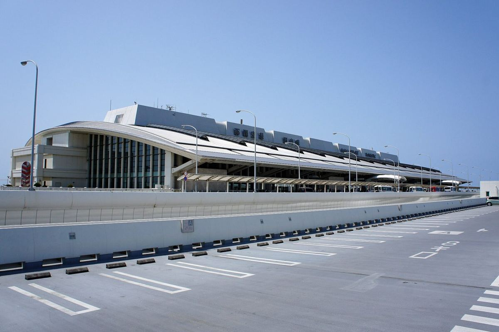


18:30目安
羽田空港へ
軽めの夕食と搭乗準備。航空券確定後にターミナル・搭乗締切を確認。
20:15 → 22:50
候補 ANA479 羽田 → 那覇
大人片道1名・諸税込 ¥15,529。同行者確定後、2026年9月末ごろ購入予定。
23:30受取（予約控え）
ABCレンタカー那覇空港営業所へ
。荷物受取後、国内線1階3番出口から道路を渡りレンタカーバス乗場11-Aへ。無料送迎7～10分に、待ち時間と貸出手続が加わります。候補便22:50着からの余裕は小さく、遅延時の連絡・受付条件は事前確認。送迎・遅便の条件。
車受取後・深夜
ホテルにチェックイン
営業所からスマイルホテル那覇シティリゾートへ車で移動。ホテル 。遅着連絡 。車受取後の深夜チェックイン可否を事前に確認。☎098-869-2511。
元気があれば
任意：ステーキハウス88Jr. 松山店
営業・受付を当日確認してから徒歩等で。翌朝に備えて軽食だけでもよい。夜食予算は2名 ¥4,000の見積り。
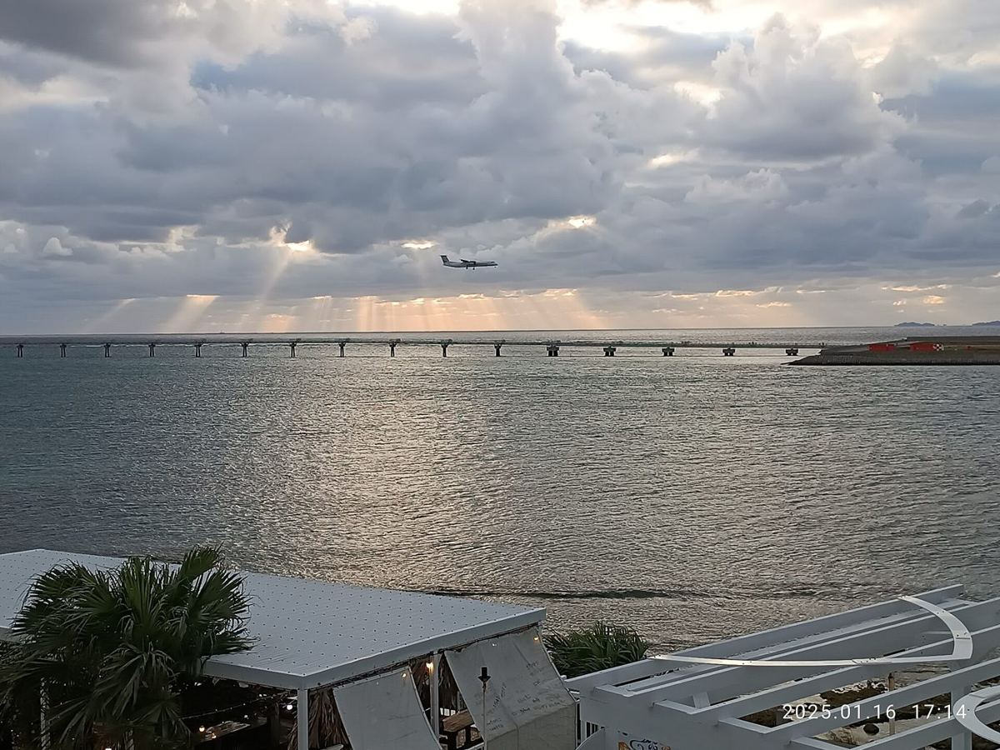


朝
軽食・ホテルから車で出発
車は24夜に受け取る予約。朝はホテルから首里9時着を目安に出発する。深夜到着の疲れが残れば朝食の寄り道を省略し、必要なら首里の滞在を短縮。泊いゆまちは余裕がある場合の代替。
09:00～10:15
首里城公園
復元中の見学。正殿内部の公開は11/23からで、10月は入れない。守礼門・城郭を楽しむ。有料区域は大人1名 ¥400（旅行日適用）。
10:15～11:15
糸満へ移動・駐車・開店待ち
道中の混雑を見ながら南下。11:30開店に合わせ、名所は追加しない。
11:30～12:45
糸満漁民食堂：島魚料理
25昼の第一候補。県産魚の料理で沖縄そばとは違う昼食を。予約不可。12:00までの入店が見込めない場合に切替判断。
とらやへ替えるなら那覇への移動と、その後ガラス村へ戻る時間も確認。難しければ道の駅いとまんで軽食（営業・販売状況は要確認）。御殿山は掲載保留で営業状況を確認できないため、今回は候補外。
13:15～14:15
琉球ガラス村でグラスを選ぶ
🎁 お土産の選び方
60分、店で比べて気に入れば購入。制作体験は入れない。入場・駐車無料。沖縄産を希望する場合は産地表示を確認し、耐熱・食洗機対応や持帰り梱包も相談。
60分、店で比べて気に入れば購入。制作体験は入れない。入場・駐車無料。沖縄産を希望する場合は産地表示を確認し、耐熱・食洗機対応や持帰り梱包も相談。
14:15～15:30
瀬長島へ、移動と余裕時間
駐車待ち・休憩を含める。空いた時間を名所追加で埋めず、15:30到着を守る。
15:30～18:00
瀬長島ウミカジテラス
明るい時間の白い街並みと海、日没前後の景色をゆっくり。ここではカフェ・軽食。店舗ごとに営業時間が異なる。
19:00目安
ホテルに戻り車を置く
夕食へは徒歩・タクシー等。飲酒する前に運転を終える。
19:30～21:00
まつもと：あぐーしゃぶしゃぶ
魚・そば・翌日の郷土料理と味を変える夜。電話予約のみ ☎098-861-1890（公式は14～17時の問合せ推奨）。
満席ならしゃぶしゃぶ金武本店（コースのみ）。しゃぶが取れなければうりずん。うりずんは翌日の郷土料理と重なる。
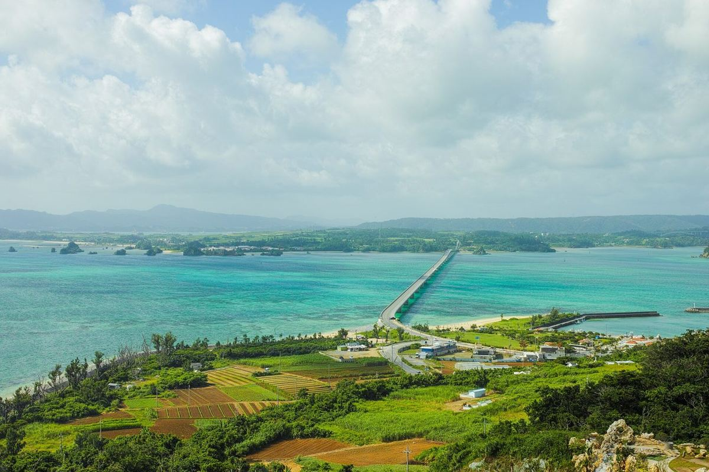


07:30
那覇ホテル出発
高速道路で北へ。渋滞時は古宇利を先に省略し、美ら海と夜の那覇を優先。
08:45～09:00
許田で休憩
トイレ・飲み物・軽食。三矢本舗などの営業は当日確認し、食べられなくても長居しない。
09:45～10:15
古宇利大橋と施設から海を見る
橋の眺めを楽しむ30分。利用施設の駐車場に停め、歩道や施設内の安全な場所から。砂浜への立寄りは入れない。
11:15待ち／11:30～12:20昼食
きしもと食堂 本店
既存の沖縄そば・じゅーしー枠を維持。予約不可・売切あり。12:00までに食事開始が難しければ切替。
キャプテンカンガルーなどへ。そちらも並ぶ場合は水族館に早く移動し館内食を検討。
12:40～15:30
沖縄美ら海水族館
約3時間（2時間50分）。通常8:30～18:30・最終入館17:30、大人1名 ¥2,180。15時の給餌は当日の開催表で確認。黒潮の海を軸に見学し、15:30に出発する。
15:30発 → 18:15～18:30
休憩を挟み、那覇ホテルへ
長距離移動の余裕を取り、ホテルに車を置いてから夕食へ。今帰仁城跡・備瀬は差替候補で、主行程に追加しない。
19:30～21:30
まーちぬ家
今回の強い希望を月曜夜に。日曜休のため25夜には置かない。☎098-863-5159。北部の夕食と同日に組まない。
予約できなければ那覇の郷土料理店を再検討。もとぶ牧場・松の古民家・鉄板焼朝日は、まーちぬ家を外して北部夕食へ変更する場合のみ。


07:20
ポーたま 牧志市場本店（必須）
7:00～20:00・年中無休（公式）。行列・受取・朝食時間を含めて出発準備。早めに並び、受取が遅れたらその後の観光を短縮。
08:15
ホテルチェックアウト
荷物をまとめ中城へ。朝の渋滞を見込む。
09:00～10:00
中城城跡
石垣と海の眺めを1時間。大人1名 ¥500。10月は受付8:30～17:00、閉門17:30。
10:00～11:30
恩納・真栄田へ移動、開店まで余裕
駐車・道路状況を確認。海中道路などを追加しない。
11:30～12:45
pizzeria da ENZO
県産小麦の生地×あぐー・島野菜。イタリアン WEST 百名店2025 予約時にランチ内容・料金・所要時間を確認。掲載コースを昼の必須メニューとは扱わない。
事前の予約確認でENZOが取れなければ、27昼を11時の高江洲そばに変更。恩納へ北上せず浦添～北谷中心へ変更すれば、アメリカンビレッジを入れやすい。主案への追加はしない。
13:45～14:15
ブルーシール 牧港店
2024年に建て替えリニューアルした牧港本店へ。本店に立ち寄る楽しみを入れ、那覇へ戻る途中で30分アイス休憩。営業時間は訪問前に確認。
15:00～16:00
国際通りでお土産をまとめて買う
🎁 お土産の選び方
御菓子御殿 国際通り松尾店 → わしたショップ 国際通り店。徒歩・会計込み60分。菓子は前者、黒糖・果汁・調味料などは後者。周辺有料駐車場の空きを確認。
御菓子御殿 国際通り松尾店 → わしたショップ 国際通り店。徒歩・会計込み60分。菓子は前者、黒糖・果汁・調味料などは後者。周辺有料駐車場の空きを確認。
16:15～17:15
ジャッキーステーキハウス
早い夕食。予約不可・毎週水曜など休業。16:40までに着席できそうになければ空港食へ切替。必須店ではないので便より優先しない。
夕食後に給油 → 19:00返却（予約控え）
ABCレンタカー那覇空港営業所へ返却
受取と同じ那覇市田原1-17-9へ。返却手続後、無料送迎バス（15～20分間隔・約7分）で空港着19:40ごろが目安。ANAの締切は保安検査20:35（出発20分前）・搭乗口20:45（10分前）・預け荷物20:35。候補便ANA478 20:55までは1時間55分。送迎が遅れそうなら夕食を短縮して返却を前倒しする。19:00は予約上の時刻で、搭乗に間に合う保証ではありません。
返却・送迎後（空港到着時刻は要確認）
那覇空港：チェックイン・保安検査を優先
買い漏れは15～20分だけ。ジャッキーを見送ったら空港食（各店の営業・混雑を確認）。主な土産は市内で購入済みに。
20:55 → 23:10
候補 ANA478 那覇 → 羽田
ANA運航。大人片道1名・諸税込 ¥14,491。同行者確定後、2026年9月末ごろ購入予定。
🍽 グルメ
まずは、二人が楽しみにしている食事から。
今回、大切にしたい2店
朝はポーたま、月曜の夜は沖縄の家庭料理と泡盛。

まーちぬ家
旅程の主案：26(月) 19:30～21:30｜
沖縄の家庭料理と泡盛
26(月)夜。強い希望を優先し、北部から那覇へ戻って郷土料理を楽しむ。
掲載営業 月～土17:00～23:00／日休
予約 予約可・☎098-863-5159
予約 予約可・☎098-863-5159
おすすめ順は、二人の希望・旅程への組み込みやすさ・料理の違いを基準にしています。
全40店を表示（冒頭の希望2店を含む）
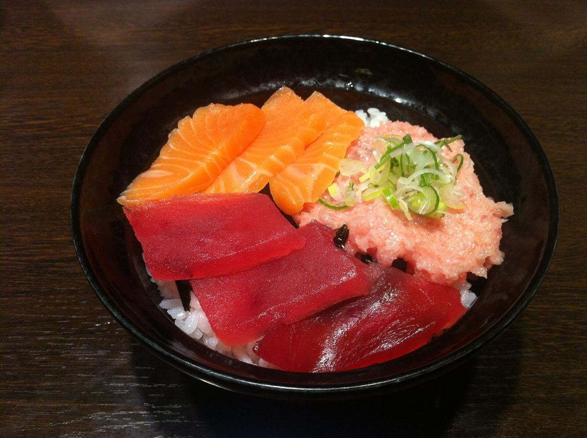
糸満漁民食堂
島魚料理・魚のバター焼き
25(日)昼。琉球ガラス村と同じ南部で、島魚料理をそばとは別の一食にできる。
掲載営業 11:30～15:00（LO14:30）／18:00～22:00（LO21:30）／火休・最終月曜夕休
予約 予約不可
予約 予約不可
古酒と琉球料理 うりずん
25夜、しゃぶ店が取れないとき。ドゥル天など郷土料理は翌日のまーちぬ家と重なる。
店舗関係者掲載17:30～24:00（LO23:30）・各曜日。空席・臨休は確認
泊いゆまち
25朝、車を早く受け取れた場合の魚市場朝食。首里9時着が難しければ寄らない。
施設・各店の営業は訪問前に確認
赤田風
琉球料理
26夜はまーちぬ家、27夜は帰路を優先。琉球料理を深く楽しむ別案として残す。
掲載営業 月～土18:00～23:00／日休
予約 予約制
予約 予約制
旬菜処びいどろ
郷土料理
唯一合う27(火)夜が帰路と重なる。今回は昼と早い夕食を優先。
掲載営業 火～土17:00～23:00／日月休
予約 電話予約
予約 電話予約
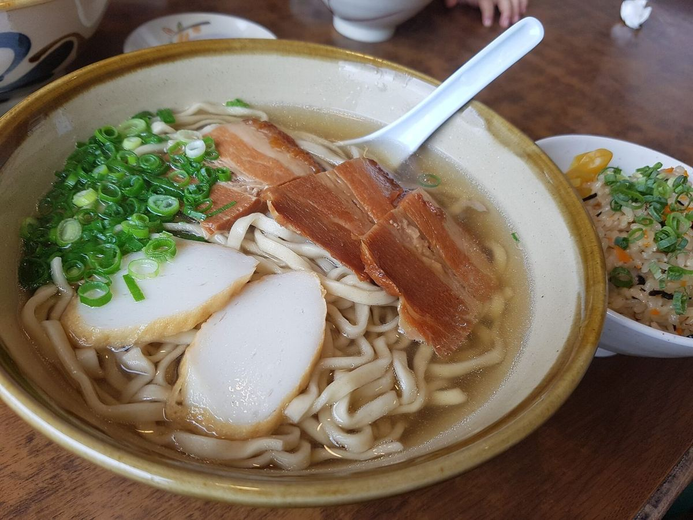
8店
沖縄そば
本部のきしもとを軸に、ゆし豆腐・創作・古民家の違いから選ぶ。
高江洲そば
ゆし豆腐そば
事前の予約確認でENZOが取れなければ、27(火)11時の代替。恩納へ北上せず浦添～北谷中心へ変更。牧港アイスともつながる。
掲載営業 10:00～15:45／日休
予約 予約不可
予約 予約不可
とらや
沖縄そば
25(日)昼の代替。糸満からの戻りとガラス村への移動を確認。火曜の27日は休み。
掲載営業 11:00～17:00／火休
予約 予約不可
予約 予約不可
OKINAWA SOBA EIBUN
創作沖縄そば
創作そばの那覇代替。きしもとと交換するなら検討し、単純な追加にはしない。
掲載営業 11:00～20:00（LO19:30）／売切終了
予約 TableCheck予約可の掲載あり
予約 TableCheck予約可の掲載あり
すーまぬめぇ
古民家で沖縄そば
那覇の古民家そばを楽しむ代替。主案のきしもととは別日程に替える場合に。
掲載営業 平日10:00～22:00／土11:00～22:00／日11:00～21:00掲載・不定休
予約 予約は15時以降
予約 予約は15時以降
ゆうなみ坂下店
沖縄そば
那覇のそば予備。主案のそばはきしもとを維持し、食べ比べを詰め込まない。
掲載営業 11:00～21:00掲載
予約 予約不可
予約 予約不可
STAND EIBUN
朝の沖縄そば
朝そばの予備。27朝の必須ポーたまを押し出さず、25朝も首里への出発を優先。
掲載営業 8:00～16:00掲載
予約 予約不可
予約 予約不可
御殿山
掲載保留で営業状況を確認できないため今回は候補外。店の評価を理由に外すのではなく、当日の代替として頼れないため。
営業状況未確認・掲載保留。当日の代替にはしない
4店
あぐー・豚料理
25夜は那覇でしゃぶしゃぶ。恩納・名護は日程を替える場合に。
まつもと
あぐーしゃぶしゃぶ
25夜。魚・そば・翌日の郷土居酒屋と重複を避け、あぐーしゃぶを一食に。
掲載営業 公式17:00～22:00
予約 電話予約のみ・☎098-861-1890
予約 電話予約のみ・☎098-861-1890
しゃぶしゃぶ金武本店
あぐーしゃぶしゃぶ
25夜まつもと満席時。那覇でしゃぶを楽しみ、運転は夕食前に終える。
掲載営業 公式17:00～21:30（掲載サイトと相違あり）
予約 コースのみ・席のみ予約不可
予約 コースのみ・席のみ予約不可
島豚・琉球牛 燦 別邸
島豚・琉球牛
恩納昼へ変更する別案。主案ではしゃぶ枠を那覇の夜へまとめる。
掲載営業 11:00～22:00（料理LO21:00）／不定休
予約 予約可
予約 予約可
やんばるダイニング松の古民家
古民家の肉料理
北部夕食へ変更する場合だけ。26夜まーちぬ家との両立はしない。
掲載営業 17:30～／日休・終了時刻要確認
予約 予約可
予約 予約可
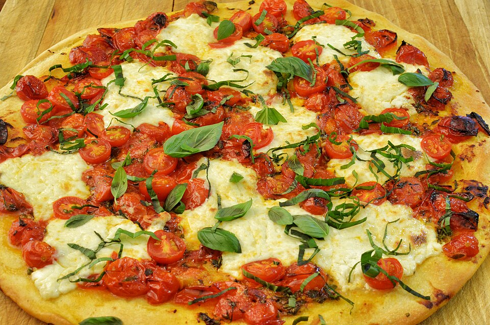
4店
ピザ・創作料理
沖縄食材を違う食べ方で。27昼のENZOから検討。
pizzeria da ENZO
県産小麦の生地×あぐー・島野菜
イタリアン WEST 百名店2025
2015年開業の琉球イタリアン。県産小麦「島麦かなさん」の自家製生地を使う薪窯ナポリピッツァ。アーサ（あおさ）・島らっきょう漬けなども使います。
27昼。沖縄食材のピザ・イタリアンで味に変化をつけ、施設から景色も楽しむ。
掲載営業 11:30～15:00（LO14:15）／17:30～22:00（LO21:00）・不定休
予約 予約可・ランチ内容と所要時間は要確認
予約 予約可・ランチ内容と所要時間は要確認
La BOMBANCE 古宇利島
創作料理（しゃぶ専門ではない）
食事そのものを目的に時間を取る店。今回は美ら海の約3時間と那覇夕食を優先。
掲載営業 12:00～15:30（LO14:00）／17:30～23:00（LO21:00）掲載
予約 予約条件を店舗へ確認
予約 予約条件を店舗へ確認
BURRATA
イタリアン
25日曜は南部から遠回り。26・27は休業曜日のため今回の主案には入れない。
掲載営業 水～日11:30～20:00／月火休
予約 予約条件を店舗へ確認
予約 予約条件を店舗へ確認
BACAR
薪窯ピザ
24は深夜着、25～27は休業曜日。店の良し悪しではなく日程が合わないため保留。
掲載営業 営業日17:00～19:15／19:30～22:00・日月火休掲載
予約 予約条件を店舗へ確認
予約 予約条件を店舗へ確認
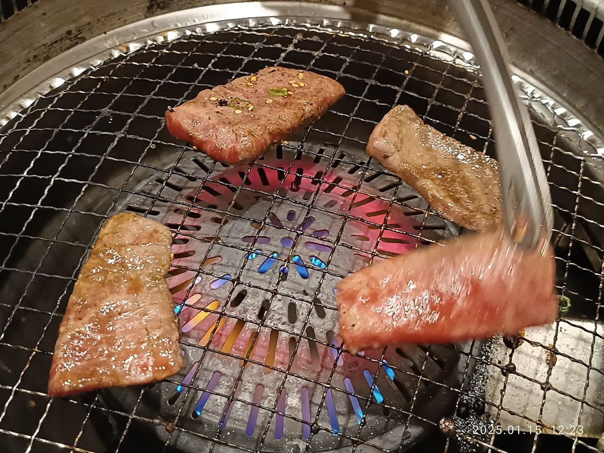
4店
ステーキ・焼肉
早い時間のジャッキーを軸に。北部の夕食は那覇の夜と交換。
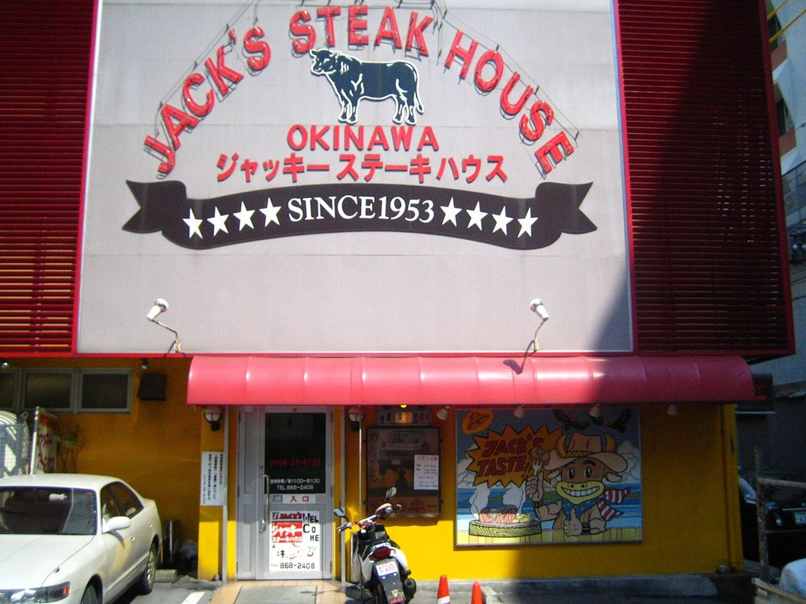
ステーキハウス88Jr. 松山店
24深夜の任意の夜食。疲れていれば休む。
営業時間・受付・現在価格は当日確認
焼肉もとぶ牧場 もとぶ店
北部で夕食する日程へ切り替えた場合だけ。26夜まーちぬ家とは両立しない。
公式11:30～15:00（LO14:00）／17:00～22:00（LO21:30）。空席・臨休は店舗へ確認
鉄板焼朝日
鉄板焼き
北部夕食へ変更時のみ。26夜まーちぬ家と同日に予定しない。
掲載営業 17:00～21:00（LO20:00）／木休
予約 予約可
予約 予約可
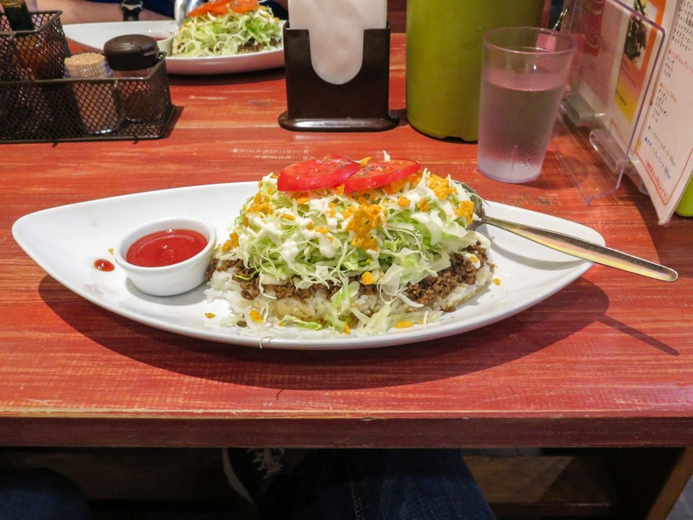
4店
バーガー・タコライス
本部の昼や空港食の代替。遠回りになる金武は別案に。
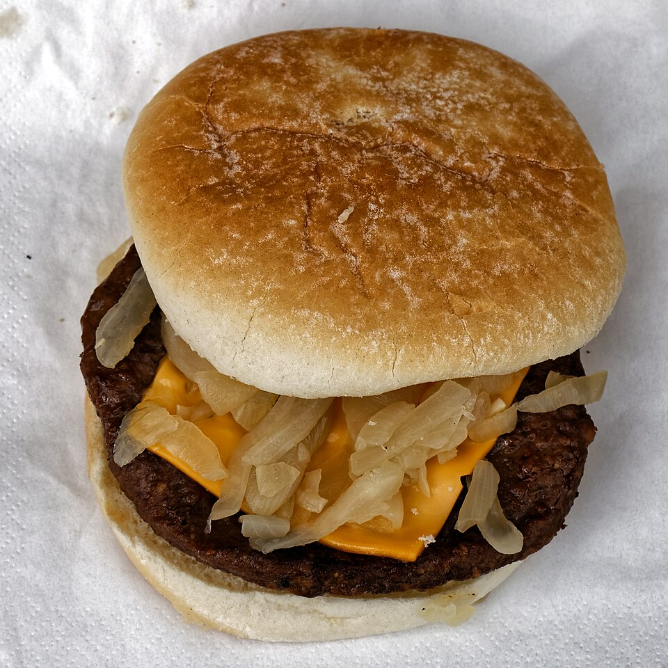
A&W 那覇空港店
27ジャッキーを見送ったときなど、空港食の候補。
空港店の営業・混雑・受付を当日確認
ラルフズバーガーレストラン
ハンバーガー
27昼を中城～コザ中心へ変更する場合。ENZO主案への追加はしない。
掲載営業 月火土日11:00～15:30／水木金休
予約 予約不可
予約 予約不可
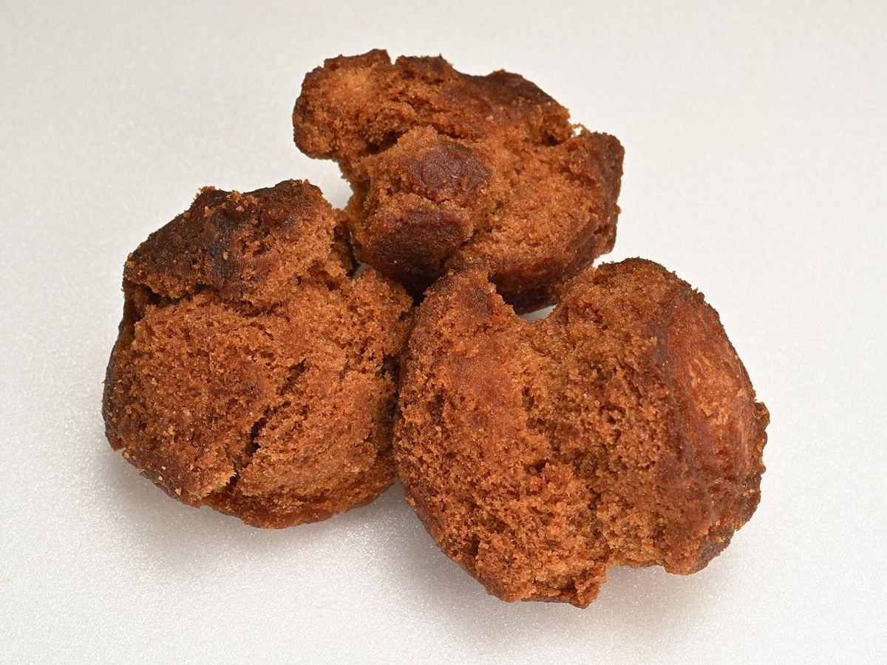
3店
スイーツ・軽食
牧港のアイス、許田の小休憩。奥武島は南部を組み替える日に。
BLUE SEAL ブルーシール 牧港本店
希望の立寄り｜27(火) 13:45に立寄る予定
27の13:45～14:15。2024年に建て替えリニューアルした本店を選び、那覇へ戻る動線でアイスを楽しむ。本店の公式紹介
営業時間は公式店舗案内で訪問前に確認
中本鮮魚てんぷら店
奥武島を回る南部の別日程なら沖縄天ぷら。25のグラス・ウミカジに追加しない。
営業日・価格は訪問前に確認
6店
その他：沖縄料理以外の名店
沖縄料理ではないが、評価が高く旅程の差し替え枠に入る店。
営業時間・定休日は旅行前に再確認してください。
O's House
ステーキ 食べログ ステーキ・鉄板焼き百名店2022／WEST百名店2024
26(月)夜のまーちぬ家の代わり、または27の夕食をジャッキーから替える場合。
掲載営業 12:00～14:00・17:30～21:00／日・祝休
予約 予約条件を店舗へ確認
予約 予約条件を店舗へ確認
Totto
イタリアン ゴ・エ・ミヨ2025 3トック・食べログ3.77
26(月)夜、北部から那覇へ戻る途中
掲載営業 19:00～22:00／土曜休
予約・価格 完全予約制・¥20,000〜29,999/人
予約・価格 完全予約制・¥20,000〜29,999/人
島キュイジーヌ あーすん
島食材のフレンチ ゴ・エ・ミヨ掲載・食べログ3.78
27(火)昼をENZOから替える場合（空港に近い）
掲載営業 日・月休
予約・価格 前日までに予約・昼¥3,000〜3,999／夜¥10,000〜14,999
予約・価格 前日までに予約・昼¥3,000〜3,999／夜¥10,000〜14,999
宗像堂
天然酵母パン 地元で評価の高い老舗（食べログ口コミ200件超）
27(火)中城の前後に寄ってパンを買う
掲載営業 10:00～18:00／水曜休
予約・価格 前日メール予約推奨
予約・価格 前日メール予約推奨
6（シス）
イノベーティブ 食べログ 創作料理・イノベーティブ百名店2025・アワード2025/2026 Bronze
26(月)夜を北部で食べる場合（那覇着が遅くなる）
掲載営業 夜のみ18:00～23:00／水曜休
予約・価格 完全予約制おまかせ・¥20,000〜29,999/人
予約・価格 完全予約制おまかせ・¥20,000〜29,999/人
PAUL
スペイン料理 食べログ スペイン料理百名店2026・ゴ・エ・ミヨ2026 3トック
26(月)夜を北部で食べる場合（美ら海の近く）
掲載営業 夜のみ18:30～21:00／水曜休
予約・価格 完全予約制・¥20,000〜29,999/人
予約・価格 完全予約制・¥20,000〜29,999/人
営業情報は2026-09-14の確認資料と、2026-09-25の追加資料に基づきます。臨休、予約枠、メニューは訪問前に確認してください。店名から掲載ページへ進めます。写真の出典・利用条件
🗺 スポット
今回の旅程は、首里・古宇利・美ら海・中城・ウミカジの主要観光5体験＋グラス選び・買い物。ほかにも選べる場所を残しています。
全28件から、行きたい場所を選び直せます。「主案」は今の旅程、「差替候補」は予定を交換する場合、「今回は見送り」は今の時間配分では難しいもの。全部を回る計画ではありません。海水浴・砂浜滞在・制作体験は予定から外しました。
28件を表示

主案
首里城公園
25(日)9:00～10:15。復元中の姿と城郭を見学。
予定の守り方 25は10:15出発を守る。屋外を歩けない天候なら南部の屋内候補へ日程ごと見直す。
75分｜大人1名 ¥400（10月の有料区域）
主案
瀬長島ウミカジテラス
25(日)15:30～18:00。昼の海から日没前後まで。
予定の守り方 明るい時間の滞在を優先。荒天時は営業・安全を確認し、近くの屋内で休憩。
2時間30分｜散策無料・飲食等別途
主案
古宇利大橋
26(月)9:45～10:15。橋と施設から海を見る。
予定の守り方 高速渋滞ならここを先に省略。美ら海と那覇のまーちぬ家を守る。
30分｜橋の通行無料・施設等別途
主案
沖縄美ら海水族館
26(月)12:40～15:30。黒潮の海を軸に約3時間。
予定の守り方 美ら海の約3時間は維持。昼食待ちが長ければ館内食へ切り替える。
2時間50分｜大人1名 ¥2,180
主案
中城城跡
27(火)9:00～10:00。石垣と海を1時間。
予定の守り方 10時出発を基準に。雨で石段が危険なら屋外見学を短縮・見送り。
60分｜大人1名 ¥500
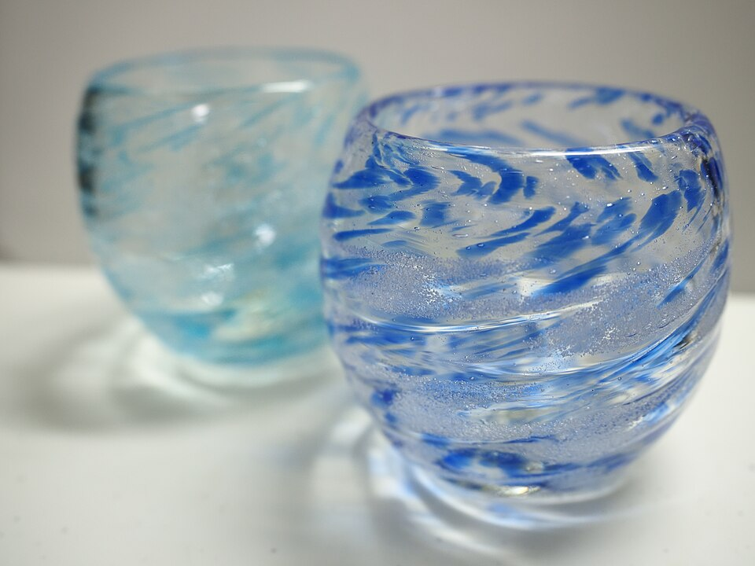
主案
琉球ガラス村
25(日)13:15～14:15。グラスを比較し、好きなら購入。
予定の守り方 店で見て好きなら購入。気に入る物がなければ買わず、15:30ウミカジ着を守る。
60分｜入場・駐車無料／商品代別途
🎁 お土産の選び方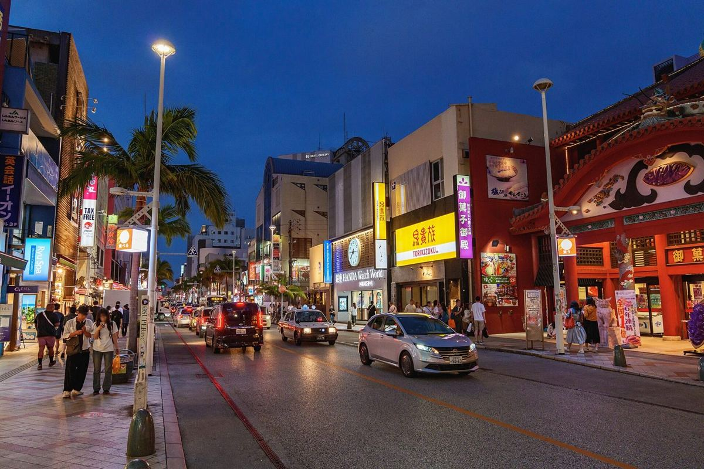
主案
国際通りのお土産
27(火)15:00～16:00。菓子と調味料を2店でまとめ買い。
予定の守り方 27の15～16時にまとめて購入。空港は買い漏れ15～20分だけ。
徒歩・会計込み60分｜商品代・駐車代別途
🎁 お土産の選び方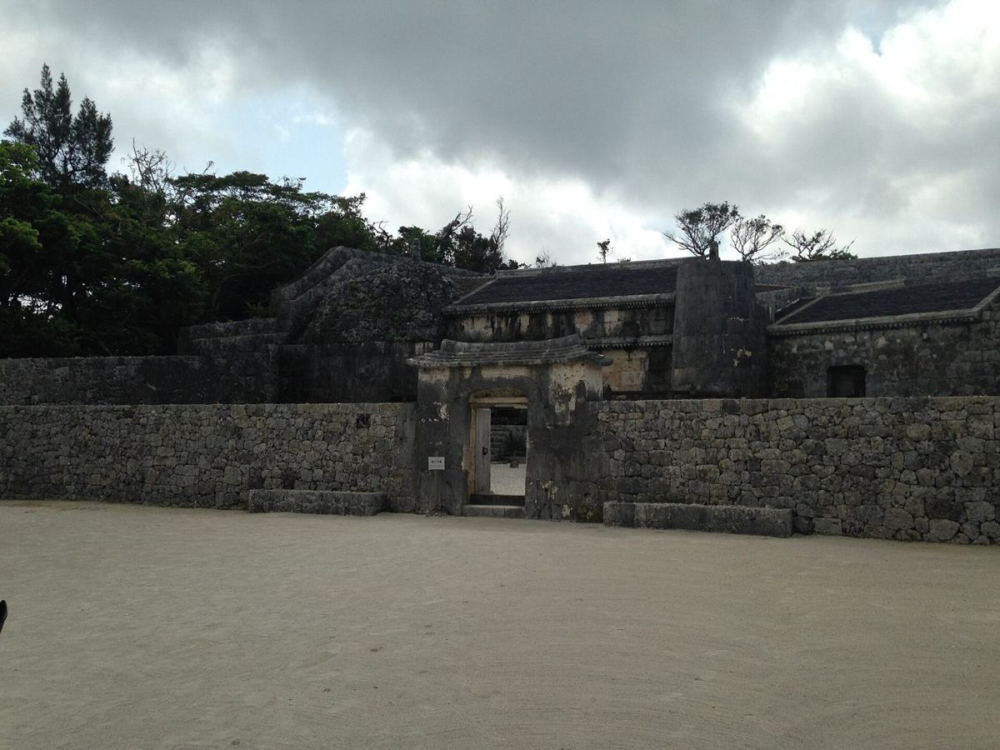
差替候補
玉陵
石造りの王家の墓を訪ね、首里の歴史を知る。
選び替えるなら 首里の文化を深く見る日へ変更する場合に。25は10:15首里出発を守り、城と墓の両方を無理に詰め込まない。
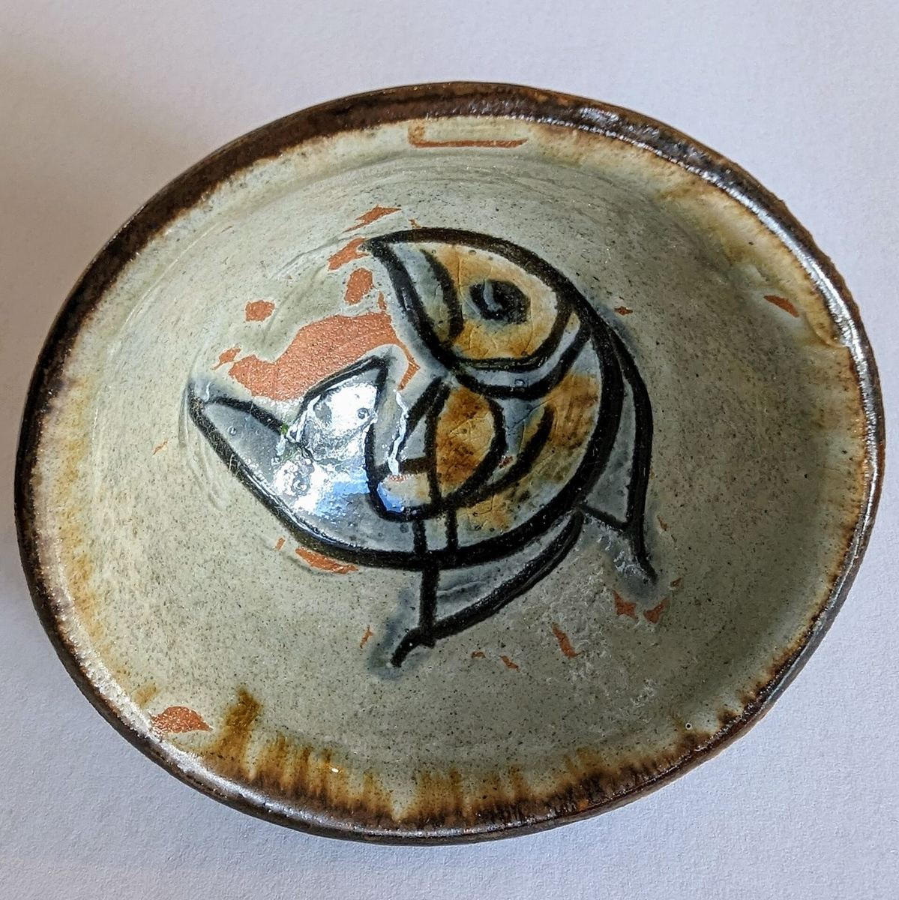
差替候補
壺屋やちむん通り
焼き物の街を歩き、暮らしで使う器を探す。
選び替えるなら 那覇の街歩きへ組み替える場合に。27の土産60分へ追加せず、購入したい店の営業を先に確認。制作体験は不要。
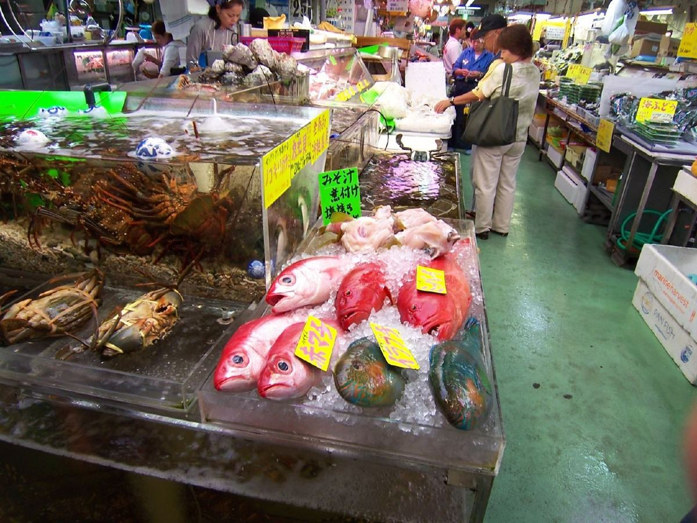
差替候補
第一牧志公設市場
魚や食材を見て歩く、那覇の食文化の入口。
選び替えるなら 那覇中心の別案で市場を見たい場合に。旧情報では第4日曜休のため25日は頼らず、公式の営業日を再確認。27朝ポーたまからの追加はしない。
差替候補
斎場御嶽
森と巨岩に囲まれた、琉球の祈りの場。
選び替えるなら 南部東側の文化を主題に再計画する日に。25日のグラス・ウミカジへ追加せず、休息日・公開区域・足元を確認。
差替候補
知念岬公園
公園から太平洋と島々を望む。
選び替えるなら 斎場御嶽など南部東側へ組み替える場合の短い散策。強風・雨なら見送り、ウミカジの明るい滞在を守る。
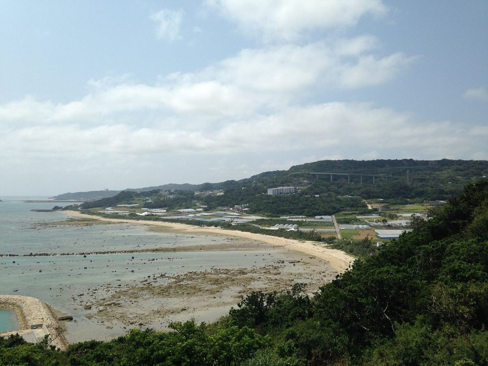
差替候補
ニライカナイ橋
海へ向かってカーブする橋の景色。
選び替えるなら 南部東側の移動で通る場合に。橋上・路肩の停車はしない。安全に利用できる展望場所と正規駐車場を確認できなければ車窓のみ。
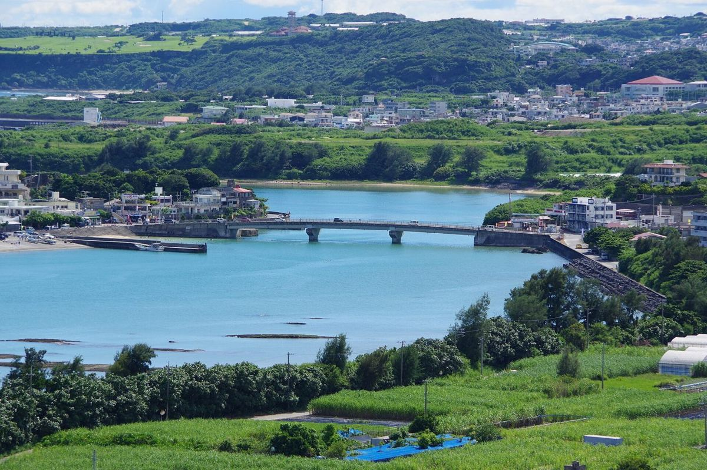
差替候補
奥武島
橋でつながる漁師の島で、港の景色と沖縄天ぷら。
選び替えるなら 南部東側の町歩きを選ぶ日なら。25のグラス・ウミカジへ上乗せしない。店の行列も見込み、海水浴は予定しない。
中本鮮魚てんぷら店の候補を見る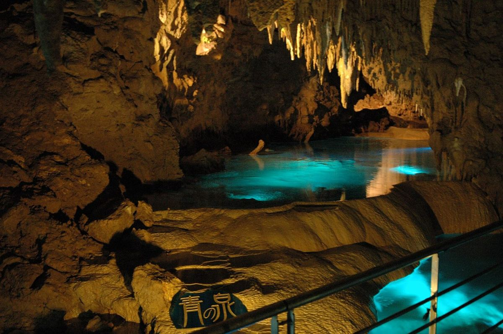
差替候補
玉泉洞・おきなわワールド
鍾乳洞の造形と、地上の琉球文化を楽しむ。
選び替えるなら 雨で屋外の城跡を見直す場合の南部別案。洞内も足元は濡れるため営業・公開状況を確認し、グラスとウミカジの時間を再計画。
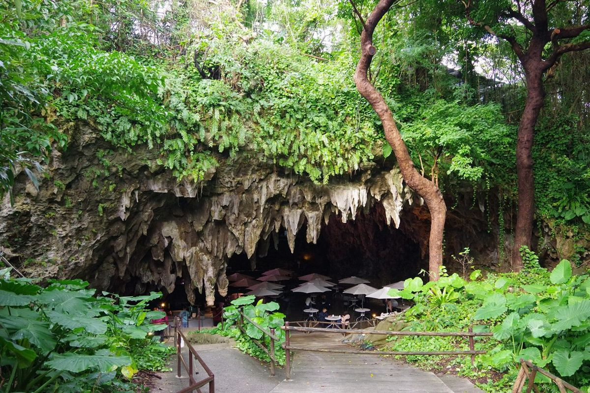
差替候補
ガンガラーの谷
洞窟と木々の景色を、ガイドと歩く自然体験。
選び替えるなら 森歩きを目的に南部を組み替える場合だけ。事前にツアー枠・集合・所要時間を確認。雨天の屋内代替とは扱わず、25主案へ追加しない。
差替候補
美浜アメリカンビレッジ
事前にENZOの予約が取れず、浦添～北谷中心へ替える場合。
選び替えるなら ENZOの予約が取れず、高江洲そばと浦添～北谷中心へ組み替える場合に。
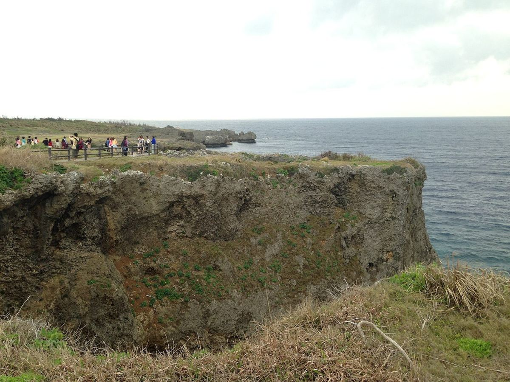
差替候補
万座毛
特徴ある岩と海を、遊歩道から眺める。
選び替えるなら 27を恩納の景色中心に組み替える場合に。ENZO・牧港・那覇土産へ追加しない。強風・荒天なら見送り。
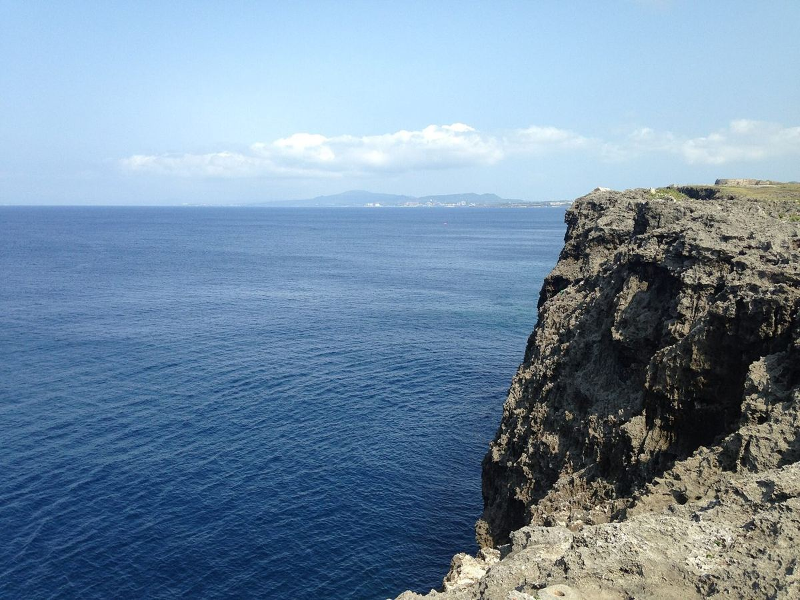
差替候補
残波岬
白い灯台と断崖がつくる読谷の海景色。
選び替えるなら 27の昼を読谷の景色中心へ替える場合に。ENZO後の追加を約束せず、風と移動時間で判断。崖際へ出ない。

差替候補
海中道路
両側に海が広がる道を走り、施設で休憩。
選び替えるなら 27日を東海岸中心へ再計画する場合だけ。ENZO・牧港へ追加しない。
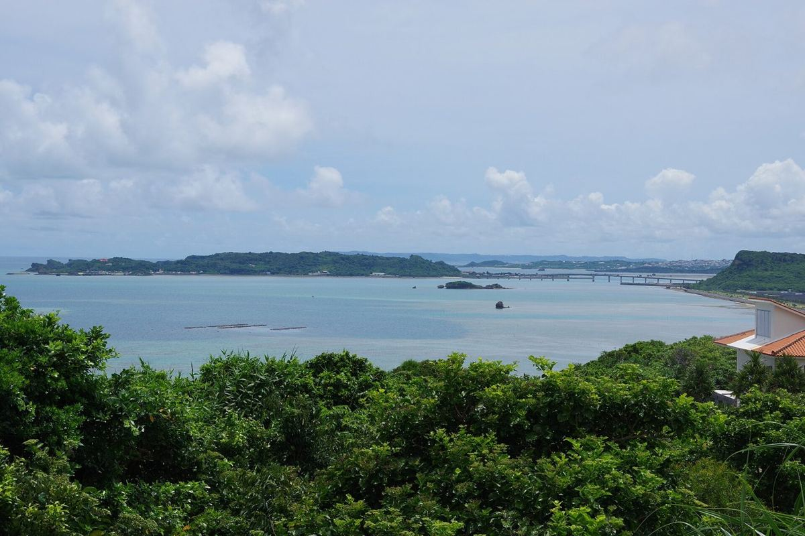
差替候補
浜比嘉島
赤瓦の集落や港に、島の暮らしを感じる。
選び替えるなら 海中道路を選ぶ東海岸の日程なら。島は一つに絞り、集落の正規駐車場から歩く。祈りの場を尊重し、砂浜滞在はしない。
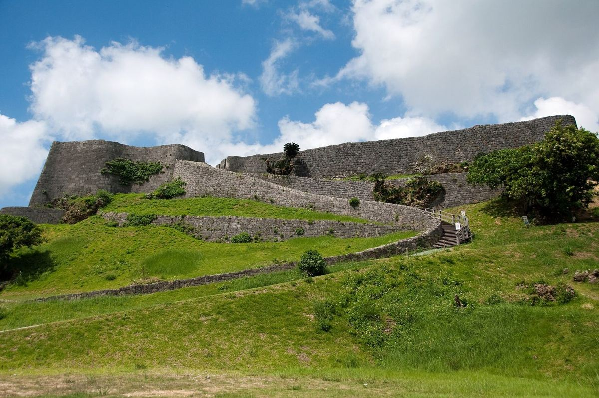
差替候補
勝連城跡
丘の上に重なる石垣と、東海岸の眺め。
選び替えるなら 27を中城から東海岸の城と景色へ替える場合に。城を両方詰め込まず、石段を歩ける天候と体力で判断。
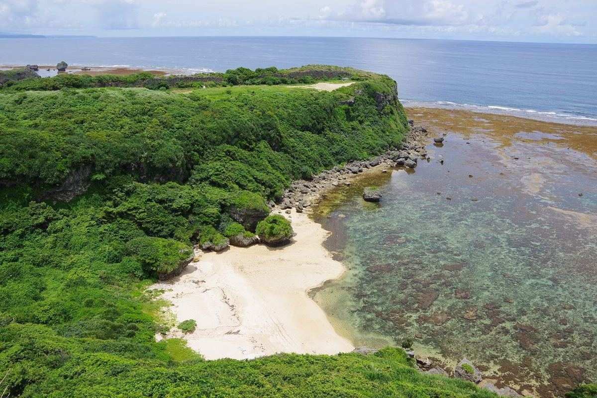
差替候補
果報バンタ
宮城島の高台から、サンゴ礁の海を見渡す。
選び替えるなら 東海岸の島景色を主題にする別案。海中道路からさらに移動するため浜比嘉などと選択し、帰路の余裕を確保。
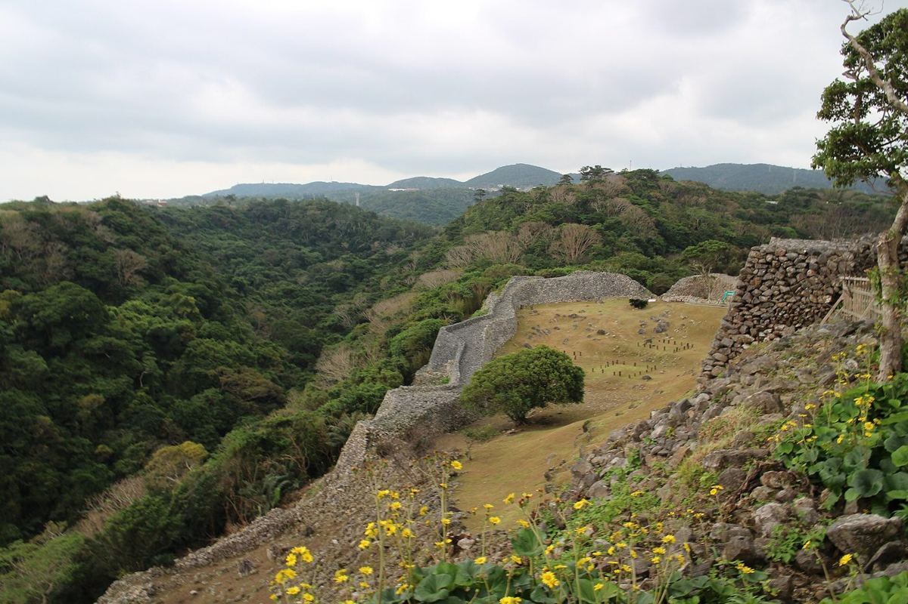
差替候補
今帰仁城跡
古宇利などと差し替える場合の城跡。
選び替えるなら 26の古宇利と交換するなら。石段を歩く時間を確保し、美ら海15:30出発を守る。
差替候補
備瀬のフクギ並木
北部の予定を減らすときの集落散策。
選び替えるなら 26の古宇利を省いて静かな散策を選ぶなら。美ら海の滞在を削らない。
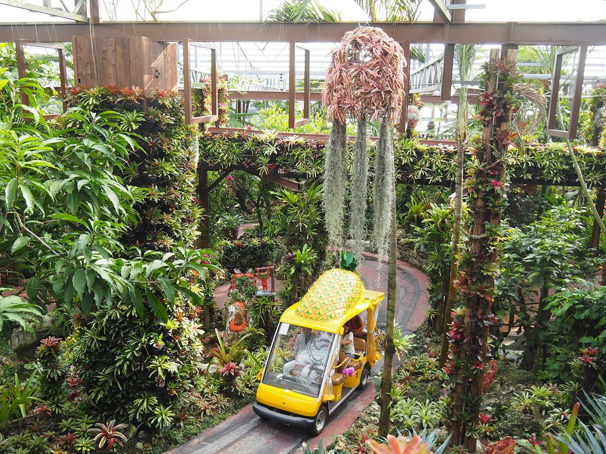
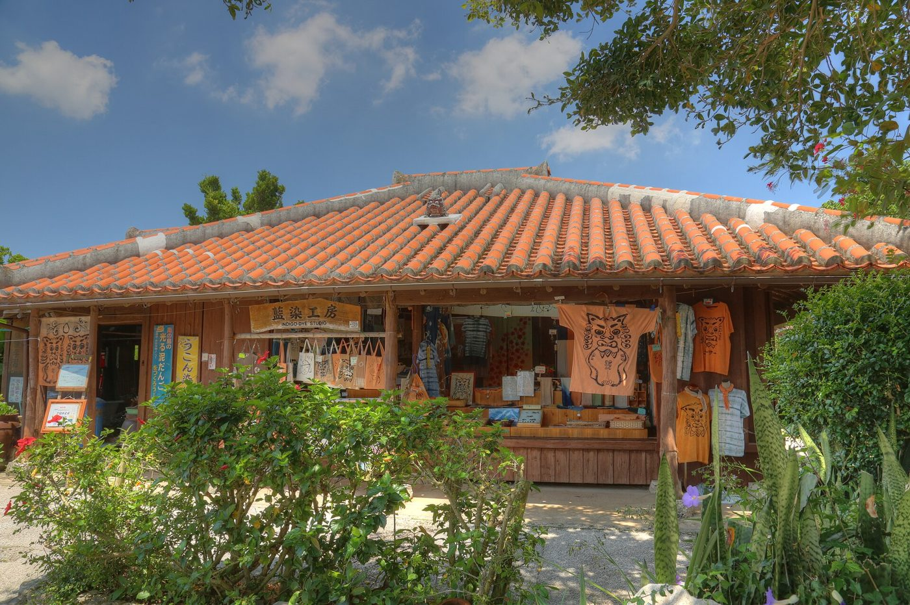
今回は見送り
南部ウワーガージャングル
夜の自然を楽しむ場合。ウミカジ日没とは競合。
選び替えるなら ウミカジ日没と那覇夕食に競合するため現行では見送り。夜の自然を優先するなら予約枠確認後に再計画。
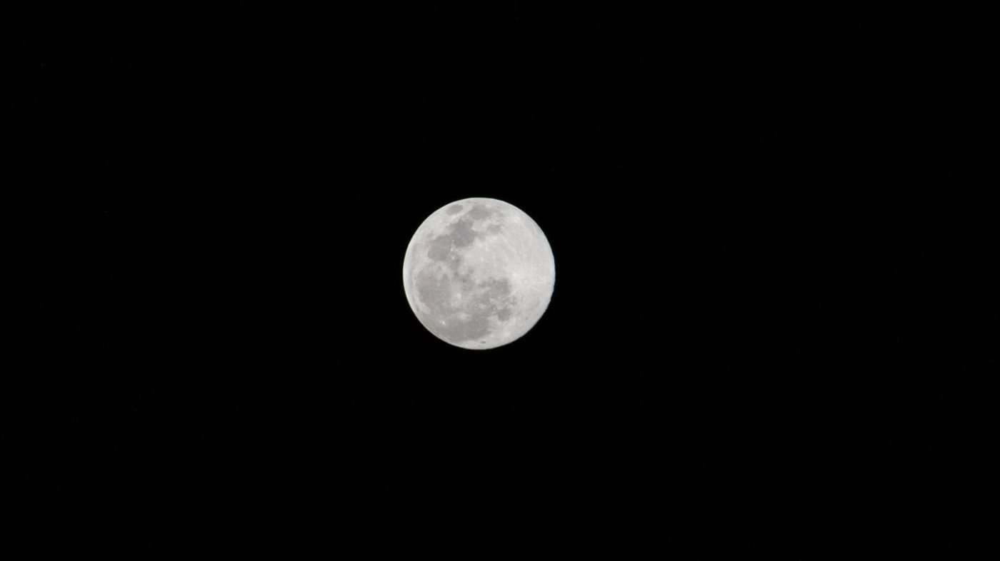
差替候補
月と明るい星を少し見る
10/26は満月。遠出せず短時間だけ。
選び替えるなら 疲れていなければ宿周辺の安全な場所で短時間。10/26は満月で暗い星は見えにくい。
営業時間・料金・公開区域は訪問前に確認してください。差替候補は移動時間も含めて選び直し、食事と帰路の余裕を確保しましょう。写真の出典・利用条件
🎁 お土産
二人の記念、配るお菓子、家で使う沖縄の味。予算は2名合計 ¥15,000の計画枠です。グラスは店で見て、気に入ったら買いましょう。
琉球ガラス村で比べる
60分で色・形・持ち心地を見比べる。見るだけでもOK、制作体験の予約は不要。
場所・詳細を見る御菓子御殿松尾 → わした
菓子は御殿、自宅用はわした。徒歩・会計込み60分、両店で重複買いしない。
場所・詳細を見る買い漏れだけ補う
主なお土産は市内で購入。19:00返却予約から候補便ANA478 20:55発（羽田23:10着）までは1時間55分。送迎・搭乗条件を確認し、必要なら返却を前倒し。空港では搭乗手続きを優先。
スケジュールへ二人の記念
琉球グラス
二人で家でも使える記念品。色・形・重さ・口当たりを比べ、気に入るものがあれば選ぶ。
- 買う場所・タイミング
- 琉球ガラス村｜25(日) 13:15～14:15
- 選ぶとき・持帰り・保存
- 沖縄産を希望するなら産地を確認（自社ベトナム製もあります）。耐熱・食洗機対応は商品表示を確認。緩衝材と梱包を相談し、割れないよう持ち帰る。
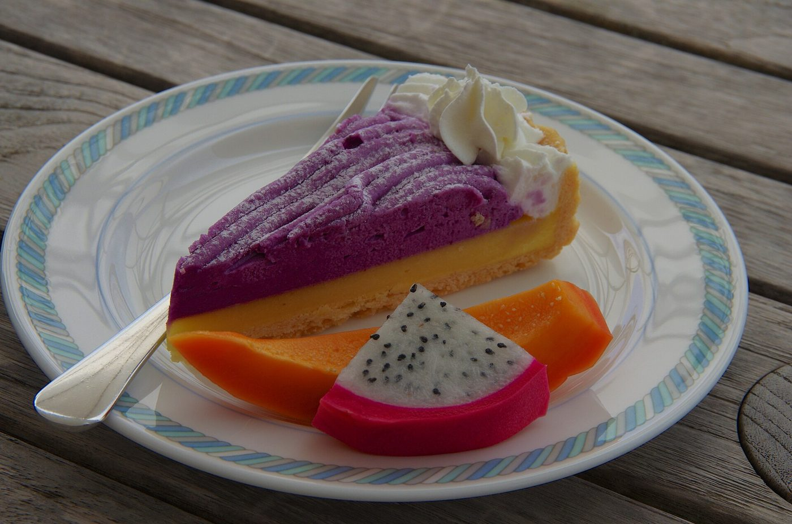
配り用
紅いもタルト
紅いもの味を楽しんでもらう定番候補。渡す人数に合わせ、箱の個数・個包装の有無を確認。
- 買う場所・タイミング
- 御菓子御殿 国際通り松尾店｜27(火) 15～16時
- 選ぶとき・持帰り・保存
- 元祖紅いもタルト10個 ¥2,160（税込）は公式通販掲載額。実店舗価格は確認。常温30日の賞味期限は購入日から30日ではありません。ラベルを見て渡す日まで余裕があるか確認。生タルトは冷凍の別商品。
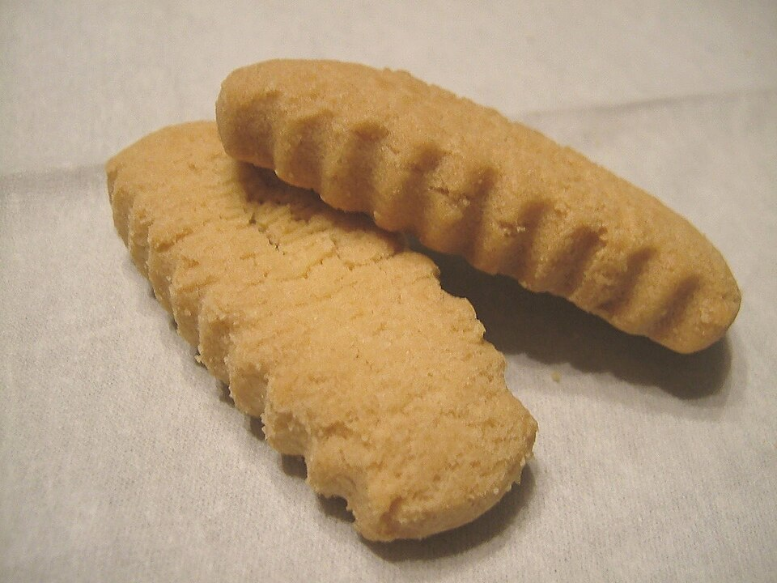
配り用
ちんすこう
職場・友人などへ、食べきれる小分けのお菓子を選びたいときに。味や包装の違いを比べる。
- 買う場所・タイミング
- 御菓子御殿 国際通り松尾店｜27(火) 15～16時
- 選ぶとき・持帰り・保存
- 個包装・原材料・賞味期限は商品ごとに確認。砕けやすいので荷物の底で押しつぶさず、箱を保護。保存方法はラベルに従う。
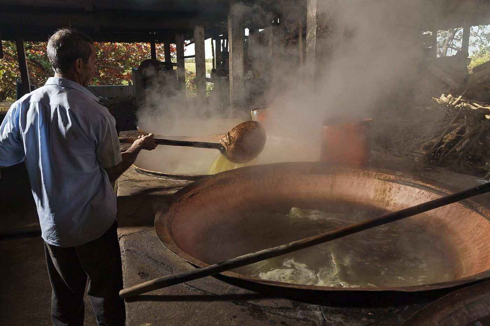
自宅用
黒糖
家で少しずつおやつや料理に使いたい二人へ。産地や味、純黒糖・加工黒糖など表示の違いを見比べる。
- 買う場所・タイミング
- わしたショップ 国際通り店｜27(火) 15～16時
- 選ぶとき・持帰り・保存
- 使い切れる量を選び、持ち帰る重さも確認。開封後の湿気対策・保存方法・賞味期限は各商品のラベルに従う。
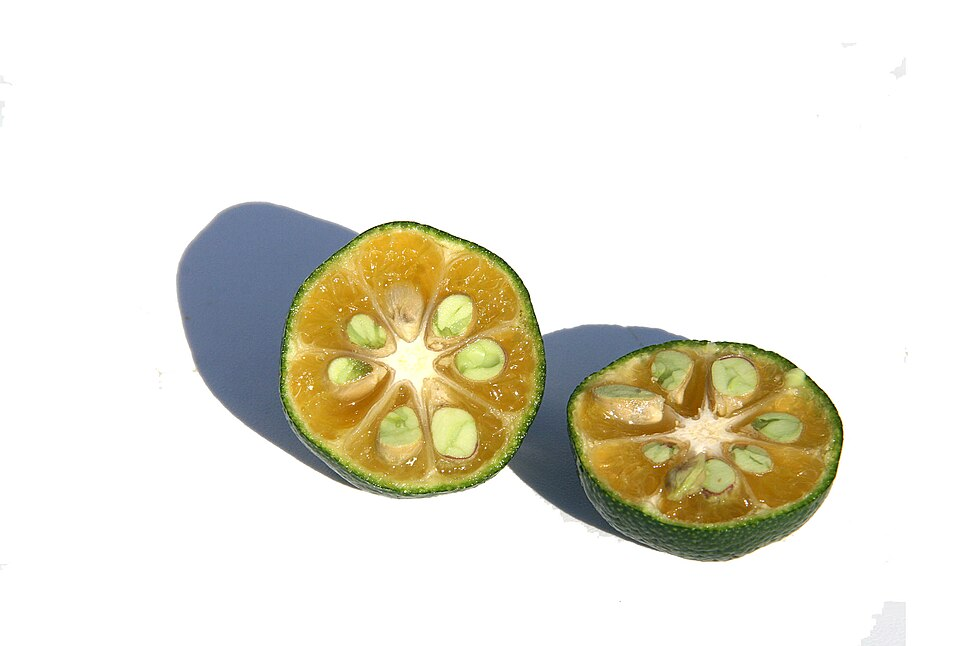
自宅用
シークヮーサー果汁・調味料
飲み物や料理に沖縄の風味を足したいときに。果汁率・加糖の有無や使い道を見て選ぶ。
- 買う場所・タイミング
- わしたショップ 国際通り店｜27(火) 15～16時
- 選ぶとき・持帰り・保存
- 液体の重さと瓶の割れに注意し、漏れ防止に袋へ。開栓後の冷蔵要否・保存方法・賞味期限をラベルで確認。航空会社の持込み条件も確認。
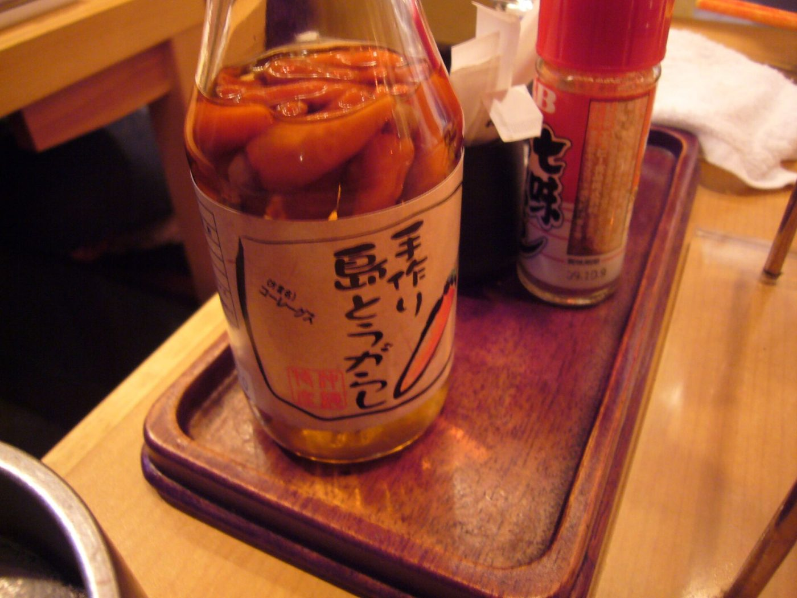
自宅用
島とうがらし・コーレーグース
辛いものが好きな二人へ。そばや料理に少量ずつ使える薬味を、辛さの好みに合わせて選ぶ。
- 買う場所・タイミング
- わしたショップ 国際通り店｜27(火) 15～16時
- 選ぶとき・持帰り・保存
- コーレーグースは泡盛漬けの商品があるため原材料・アルコール表示を確認。瓶の破損・液漏れを防ぎ、開栓後の保存は商品表示に従う。
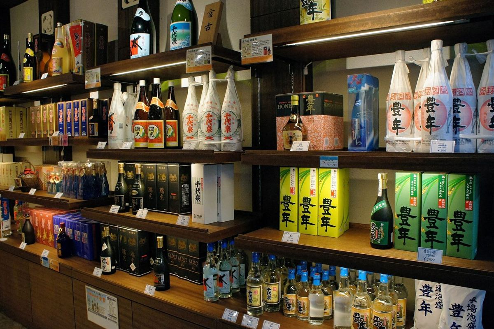
お酒好きへ
泡盛
お酒を楽しむ人や自宅用に。銘柄・度数・熟成の違いを見て、飲み方や好みを店で相談する。
- 買う場所・タイミング
- わしたショップ 国際通り店｜27(火) 15～16時
- 選ぶとき・持帰り・保存
- 度数・容量で航空会社の持込み条件を確認。重量と割れ物の梱包を考えて選ぶ。保存方法は商品表示に従い、運転前は飲まない。
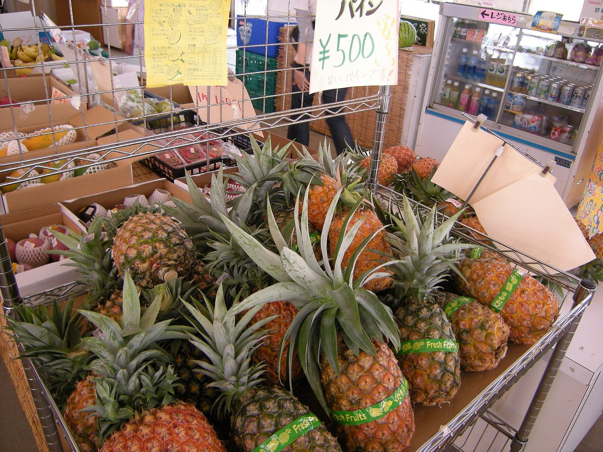
パーク採用時
パイナップル菓子
パークの思い出を持ち帰りたい場合だけ。焼菓子などから好みと持ち運びやすさで選ぶ。
- 買う場所・タイミング
- ナゴパイナップルパーク｜26の古宇利などと差し替えた場合のみ
- 選ぶとき・持帰り・保存
- お土産のためだけにパークを追加しない。要冷蔵・個包装・賞味期限・原材料を確認し、常温で運べるかラベルと店員に確認。
買う場所のメモ
店舗・商品情報は2026-09-14の確認資料に基づきます。価格・在庫・営業日は購入前に確認。市内は周辺有料駐車場の当日の空きを確認し、路上駐車はしません。2名の全体予算を見る · 写真の出典・利用条件
📖 予習
01 / 7分沖縄ごはんの読み方 食べる前に知ると2倍おいしい
この旅で役立つ場所
10/25 糸満漁民食堂（島魚）・まつもと（あぐー）／10/26 きしもと食堂 本店（沖縄そば・じゅーしー）・まーちぬ家（郷土料理）／10/27 ポーたま・ブルーシール牧港本店・ジャッキーステーキハウス
そば粉を1グラムも使っていないのに「そば」。魚売り場には、青や赤の熱帯魚のような魚。沖縄の食べものは、知らずに食べると「なんだか違う」で終わってしまいます。
でも、ひとつずつに理由があります。王さまの国の料理、中国との行き来、暑さの工夫、そして戦後のアメリカ。理由を知ってから食べると、同じひと口がちゃんと「沖縄の味」に変わります。
沖縄そばは、なぜ「そば」なの？
沖縄そばの麺は、小麦粉100%です。そば粉は入っていません。
1976年、公正取引委員会から「そば粉が30%以上入っていないものを『そば』と表示してはいけない」と指摘され、名前が消えかけました。沖縄の製麺業者は東京まで何度も交渉に通い、1978年10月17日、「本場沖縄そば」という名前が正式に認められます。いまも10月17日は「沖縄そばの日」です。
麺は、黄色っぽくて弾力があります。昔はかん水の代わりに、木を燃やした灰を水に溶かした上澄み（灰汁）で麺を締めていました。これが「木灰（もっかい）そば」です。1960年代に木灰が手に入りにくくなり、かん水に替わっていきました。
具の名前を覚える
- 三枚肉：皮つきの豚バラ肉を、砂糖・醤油・泡盛・だしで煮たもの。昔からの定番の具
- ソーキ：豚のあばら（スペアリブ）を甘辛く煮たもの。骨つき。ソーキをのせた「ソーキそば」は、1975年に名護で生まれたとされる、意外と新しい一杯です
- 軟骨ソーキ：骨ではなく、やわらかく煮た軟骨つきのあばら。骨ごと食べられます
- かまぼこ・ねぎ・紅しょうが：これが基本の顔ぶれ
卓上の小瓶に入った赤いものはコーレーグース。島とうがらしを泡盛に漬けた調味料です。数滴で味が締まります。入れすぎると、かなり辛いので最初は2〜3滴から。
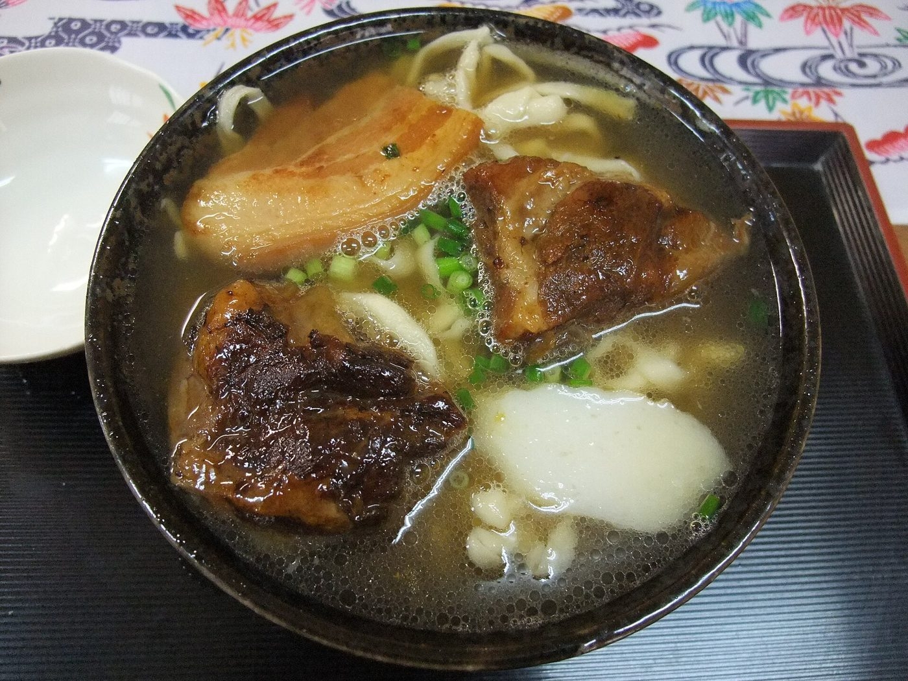
きしもと食堂で頼むもの
きしもと食堂は1905年（明治38年）創業と伝えられる老舗です。メニューは創業からずっと「そば」と「じゅーしー」だけ、と紹介されています。木灰を使った麺づくりを続けている店としても知られます。
じゅーしーは、沖縄の炊き込みご飯。豚肉のだしで、豚肉や野菜、ひじきなどを炊き込みます。もともとは旧盆などの行事に欠かせない料理でした。そばの汁と交互に食べると、「豚のだしの国」だということがよくわかります。
島魚の名前を知っておく
沖縄の魚は、本土では見かけない色あざやかなものが多いのが特徴です。お店のメニューは方言名で書かれていることが多いので、4つだけ覚えておきましょう。
- グルクン（タカサゴ）：沖縄県の「県の魚」。25cmくらいの淡白な白身です。定番は丸ごとの唐揚げ。頭から尾まで、骨ごと食べられるくらいカリッと揚げます
- イラブチャー（ブダイの仲間）：青や緑の、うろこの大きな魚。見た目に驚きますが、身は白身で刺身が人気です
- ミーバイ（ハタの仲間）：中でも「アカジンミーバイ」は沖縄三大高級魚のひとつ。塩だけで煮るマース煮が、魚の甘みをいちばん素直に感じられる食べ方です
- マクブ（シロクラベラ）：これも三大高級魚。クセのない締まった白身で、刺身や魚汁で食べます
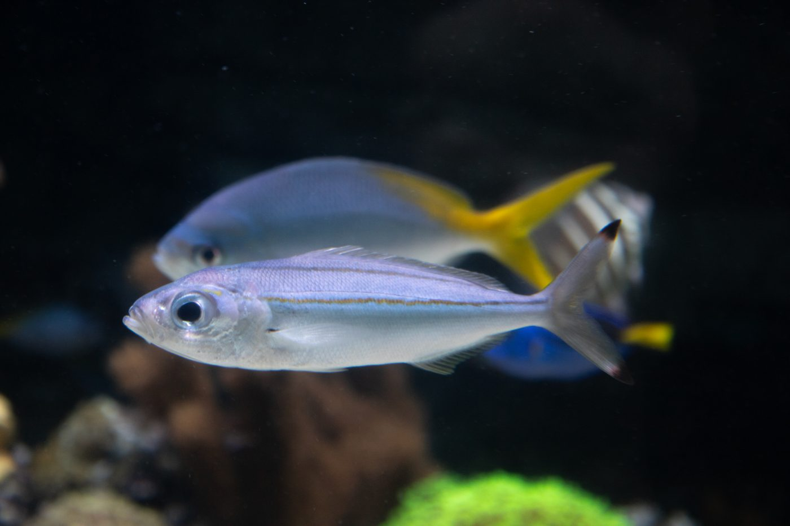
糸満漁民食堂で頼むもの
糸満は、昔から海人（うみんちゅ）の町として知られる漁師町です。糸満漁民食堂は、鮮魚の仲卸の家に生まれた店主が2013年に始めた店。看板は、その日にとれた魚（「イマイユ」）をたっぷりのバターで焼いたバター焼きで、外はカリッと、中はふっくら。アーサ（あおさ）を使ったバターソースなど、自家製のソースが添えられると紹介されています。
刺身の盛り合わせにイラブチャーやミーバイが入っていたら、先ほどの名前を思い出してください。「青い魚なのに身は白い」の実物に会えます。
あぐー 600年の豚が、絶滅寸前から戻ってきた
沖縄の料理は「豚に始まり豚に終わる」と言われます。中国との交流の中で豚肉の文化が育ち、「鳴き声以外は全部食べる」とまで言われるほど、肉も内臓も耳も足も料理にしてきました。
アグーは、約600年の歴史を持つとされる沖縄の在来豚です。小さめの黒い豚で、戦前には10万頭いたとも言われます。ところが戦争と、大きく育つ西洋種の豚の広まりで数が激減。1981年の調査で見つかった純粋に近いアグーは、わずか30頭ほどでした。
そこから、名護博物館の館長と北部農林高校の先生たちが保存に乗り出します。集めた18頭から、約10年かけて雑種の血を取り除く交配を続け、アグーは絶滅をまぬがれました。
いまお店で食べる「あぐー」の多くは、復元したアグーを親にして、西洋種の豚とかけ合わせるなどして生まれたブランド豚です。つまり、今夜の一皿の向こうには、1981年に残った30頭がいます。
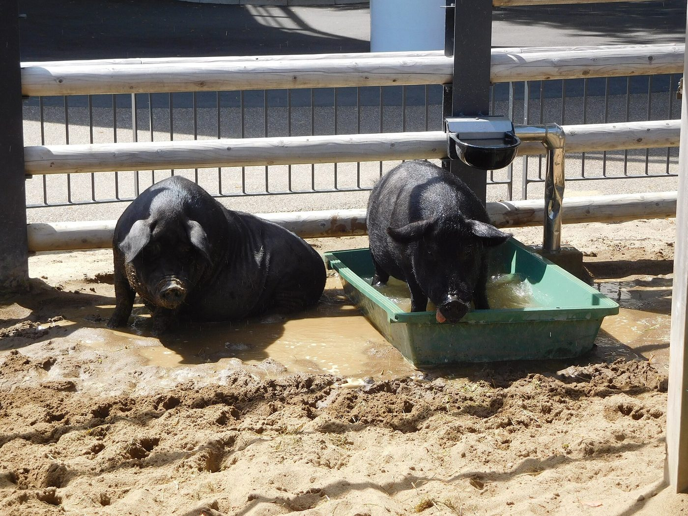
チャンプルーは「豆腐の炒めもの」
ゴーヤーチャンプルーのチャンプルーは、「混ぜこぜ」という意味と説明されることが多い言葉です。語源はインドネシア語やマレー語の「チャンプル（混ぜる）」説など、はっきりしていません。
ただ、昔の沖縄の言葉の記録では、チャンプルーは「豆腐と野菜の炒めもの」を指していました。主役は島豆腐です。沖縄の豆腐は固くてしっかりしていて、炒めても崩れません。できたてを水にさらさずに売るので、うまみが残っているのも特徴です。
組み合わせで名前が変わります。
- ゴーヤーチャンプルー：ゴーヤー＋豆腐。夏野菜の王様
- マーミナーチャンプルー：もやし（マーミナー）＋豆腐
- ソーミンチャンプルー：そうめんの炒めもの。豆腐が入らないので、本来の呼び方は「ソーミンタシヤー」。チャンプルーは豆腐入り、タシヤーは豆腐なし、という使い分けです
郷土料理のお品書きを読む
まーちぬ家のような郷土料理の店では、お品書きにこんな名前が並びます。
- ラフテー：皮つき豚バラの角煮。砂糖・醤油・泡盛でじっくり煮込みます。もとは琉球王国時代からの保存食で、1か月ほどもったと言われます。いまはお祝いや法事の席の料理です
- ミミガー：豚の耳。「ミミガーさしみ」は刺身ではなく、ゆでて細切りにした耳を、きゅうりやもやしとピーナツバター入りの酢だれで和えたもの。コリコリした歯ざわりです
- ジーマーミ豆腐：「ジーマーミ」は地豆、つまり落花生。落花生の汁をいもくずで練り固めた、ごま豆腐のような一品です。落花生が貴重だった昔は、特別な日にしか食べられませんでした
- 海ぶどう：プチプチはじける海藻。標準和名はクビレズタです
- イカスミじゅうしー：イカスミで真っ黒に炊いたじゅーしー
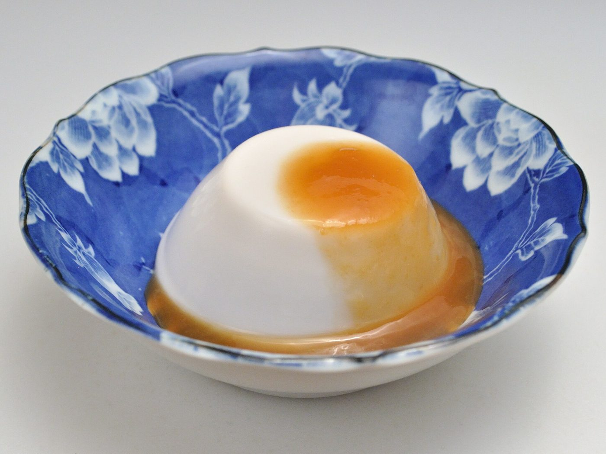
クスイムン ごはんは「薬」
沖縄の家庭料理には、「クスイムン（薬になるもの）」「ヌチグスイ（命の薬）」という考え方があります。ぬちは「命」、ぐすいは「薬」。毎日の食事で病気を防ぎ、治す。中国から伝わった「医食同源」の考え方です。
たとえばイカスミ汁は、のぼせや産後の回復に、ヤギ汁（ヒージャー汁）は疲れをとる滋養の料理として食べられてきました。
沖縄料理の基本は、宮廷料理と庶民料理の2本立てです。首里城で中国や日本からの客をもてなすために磨かれた宮廷料理と、毎日の体をつくる庶民料理。まーちぬ家のお品書きにも、その両方の血が流れています。
アメリカ世（ゆー）がくれた味
1945年から1972年まで、沖縄はアメリカの統治下にありました。その27年間に、アメリカの食べものが沖縄の日常に入りこみます。
- ポーク（ランチョンミート）：米軍の携行食だった缶詰が、戦後の食べもの不足の中で広まりました。沖縄は、いまもポーク缶の消費量が日本一と言われます。卵焼きと一緒に朝ごはんにする「ポーク玉子」は食堂の定番。これをおにぎりにしたのがポークたまごおにぎりです。専門店「ポーたま」の1号店は2014年、牧志公設市場の近くに生まれました
- ステーキ：ジャッキーステーキハウスの創業は1953年。店内には、米軍が衛生基準を満たした店に出した許可証「Aサイン」がいまも飾られています。英語とドルで書かれた創業当時のメニューも残っています
- A&W：1963年に開いた屋宜原店は、A&Wの日本1号店で、日本で最初のファストフード店とされます。銀座にマクドナルドができる8年前です
- ブルーシール：1948年、米軍基地の中で、米兵のための牛乳やアイスをつくる工場として始まりました。基地の外で売り始めたのが1963年の浦添・牧港の店。これが今の牧港本店です。2024年7月に建て替えてリニューアルし、2階には1948年からの歴史をたどるコーナーがあります
- タコライス：1984年、金武町のパーラー千里で生まれました。基地の町で、安くてお腹いっぱいになるものを、とタコスの具をごはんにのせたのが始まりです
この旅で会えるもの
- 10/25 昼 糸満漁民食堂で、イラブチャーやミーバイの名前を刺身で確かめよう
- 10/25 夜 まつもとで、600年の豚「あぐー」の脂の甘さを味わおう
- 10/26 昼 きしもと食堂で、木灰のそばとじゅーしーを交互に
- 10/26 夜 まーちぬ家で、ラフテー・ミミガー・ジーマーミ豆腐をお品書きから選ぼう
- 10/27 朝 ポーたまで、戦後の缶詰から生まれたおにぎりを
- 10/27 ブルーシール牧港本店の2階で、1948年からの歴史をのぞこう
現地で探す3つ
- そば屋の卓上にある小瓶「コーレーグース」。中に島とうがらしが沈んでいます
- 魚料理の店のメニューで、「グルクン」「イラブチャー」「ミーバイ」の文字
- ジャッキーステーキハウスの壁に飾られた「Aサイン」
出典
- 1976年に公取委が「そば粉30%以上」の基準を指摘、1978年10月17日に「本場沖縄そば」認可、10/17は沖縄そばの日（1997年制定）：出典1 ／ 出典2
- 麺は小麦粉100%、木灰→1960年代にかん水へ（1961年）、ソーキそばは1975年に名護で登場：出典1 ／ 出典2
- 具（三枚肉・かまぼこ・ねぎ・紅しょうが）、三枚肉は砂糖・醤油・泡盛・だしで煮る、軟骨ソーキ、コーレーグース＝島とうがらしの泡盛漬け、だしは豚骨とかつお節：出典1
- きしもと食堂 1905年（明治38年）創業、メニューはそばとじゅーしーのみ、木灰そば：出典1 ／ 出典2
- じゅーしー＝炊き込みご飯、旧盆の行事料理：出典1 ／ 出典2
- グルクン（タカサゴ）＝県魚・25cm前後、イラブチャー（ブダイ類）、沖縄の魚は色鮮やか：出典1
- グルクンは唐揚げ、アカジンミーバイはマース煮、マクブ＝シロクラベラ（刺身・魚汁）、三大高級魚：出典1 ／ 出典2
- 糸満漁民食堂：2013年開業、店主は鮮魚仲卸の家、イマイユのバター焼き・自家製ソース（アーサバター）：出典1 ／ 出典2 ／ 出典3
- 琉球料理は「豚に始まり豚に終わる」、中国との交流で豚肉文化：出典1
- 「鳴き声以外すべて食べる」、ミミガーさしみの作り方：出典1
- アグー約600年、戻し交配で復元、ブランド豚「あぐー」は復元アグーを親に交配：出典1
- 戦前10万頭（と言われる）、1981年に約30頭、18頭を北部農林高校に集め約10年かけ戻し交配、名護博物館長の島袋正敏と北部農林高校の太田朝憲：出典1 ／ 出典2
- チャンプルー：豆腐入り炒め、語源は諸説（campur説など）、国立国語研究所資料では豆腐の油炒め、マーミナーチャンプルー：出典1 ／ 出典2
- 島豆腐は固い・水さらししない、ゴーヤーチャンプルー：出典1
- ソーミンタシヤー：豆腐が入らないのでタシヤー：出典1
- ラフテー：皮付き三枚肉、砂糖・醤油・泡盛、保存食、客膳・法事料理：出典1 ／ 出典2
- ジーマーミ＝地豆（落花生）、いもくずで練る、貴重で特別な日の料理：出典1
- 海ぶどう＝クビレズタ（Caulerpa lentillifera）：出典1
- クスイムン・ヌチグスイ・医食同源、宮廷料理と庶民料理の2本立て：出典1
- イカスミ汁・ヒージャー汁の効用：出典1
- ポーク缶：米軍の携行食が戦後に普及、消費量日本一（と言われる）：出典1 ／ 出典2
- ポーたま：2014年に牧志公設市場近くで1号店：出典1
- ジャッキーステーキハウス：1953年創業、Aサイン、英語とドル表記のメニュー：出典1
- A&W：1963年屋宜原店が日本1号店・日本初のファストフード、マクドナルドの8年前、ルートビア14種以上のハーブ：出典1 ／ 出典2
- ブルーシール：1948年創業（米軍との契約・具志川）、1963年浦添・牧港に店、2024年7月23日牧港本店リニューアル、2階ヒストリーコーナー：出典1 ／ 出典2
- タコライス：1984年、金武町パーラー千里、儀保松三：出典1 ／ 出典2
- 米国統治27年（1945〜1972）：出典1
- まーちぬ家のお品書き例（イカスミじゅうしい・ジーマミ豆腐・海ぶどう等）：出典1 ／ 出典2
02 / 5分泡盛とオリオン グラスの中の600年
この旅で役立つ場所
10/25 首里城（泡盛をつくってよかった町・首里）・まつもと／10/26 許田の道の駅（シークヮーサー）・北部へ向かう途中の名護（オリオンビールの町）・まーちぬ家（泡盛）／10/27 国際通り（泡盛・さんぴん茶のお土産）
沖縄のお酒といえば泡盛。でも、泡盛がタイと深い縁のあるお酒だと知っている人は多くありません。
原料はタイのお米。蒸留の技も、15世紀ごろにタイ（当時のシャム）から伝わったとされます。グラスの中には、海の向こうとつながっていた琉球の歴史が溶けています。
泡盛は、タイから来た
15世紀、琉球は中国や東南アジアと盛んに貿易をしていました（3本目「琉球王国の物語」で詳しく）。その行き来の中で、シャムから蒸留酒と、その造り方が伝わったとされます。泡盛は、日本でいちばん古い蒸留酒とも言われます。
王国の時代、泡盛は王府がきびしく管理していました。造ってよかったのは、首里城のすぐそばの赤田・崎山・鳥堀の3つの村だけ。「首里三箇（さんか）」と呼ばれます。10/25に歩く首里の丘は、泡盛のふるさとでもあります。
「泡盛」という名前が記録に初めて出てくるのは1671年。由来は、粟（あわ）で造ったから、薩摩が名づけたから、などいくつかの説があります。沖縄県酒造組合がいちばん有力としているのは「泡」説です。蒸留したての酒の出来を、泡の立ち具合で見分けていた。その「泡を盛る」から、という説です。
泡盛の4つの約束
泡盛には、他の焼酎と違う4つの特徴があります。
- 原料はお米：今はほぼタイ米。大正の終わりごろから輸入され、昭和に定着しました。粒が硬くてさらさらしているので麹にしやすく、発酵の温度も管理しやすく、お酒もたくさんとれる。理由はとても実用的です
- 黒麹菌を使う：黒麹はクエン酸をたくさん出し、雑菌が増えるのを防ぎます。暑い沖縄で、お酒を腐らせずに造るための知恵です
- 仕込みは1回だけ：お米を全部麹にして、水と酵母を加えて一度に発酵させます。「全麹（ぜんこうじ）仕込み」と呼ばれ、泡盛だけのやり方です
- 単式蒸留：1回だけ蒸留するので、お米の香りがそのまま残ります
古酒（クース）は、寝かせて育てる
泡盛は、寝かせるほどまろやかになります。3年以上寝かせたものが古酒（クース）です。2015年からは、中身の全部が3年以上寝かせたものでないと「古酒」と書けなくなりました。ラベルに「古酒」とあれば、全量が3年以上です。
家で何十年も育てる人もいます。そのための技が仕次ぎ（しつぎ）。古い順に甕を並べ、いちばん古い甕（親酒）から飲んで減った分を、2番目に古い甕から足す。2番目の減った分は3番目から……と順に注ぎ足していきます。琉球王国の時代から続く方法で、香りを落とさずに古酒を育て続けられます。
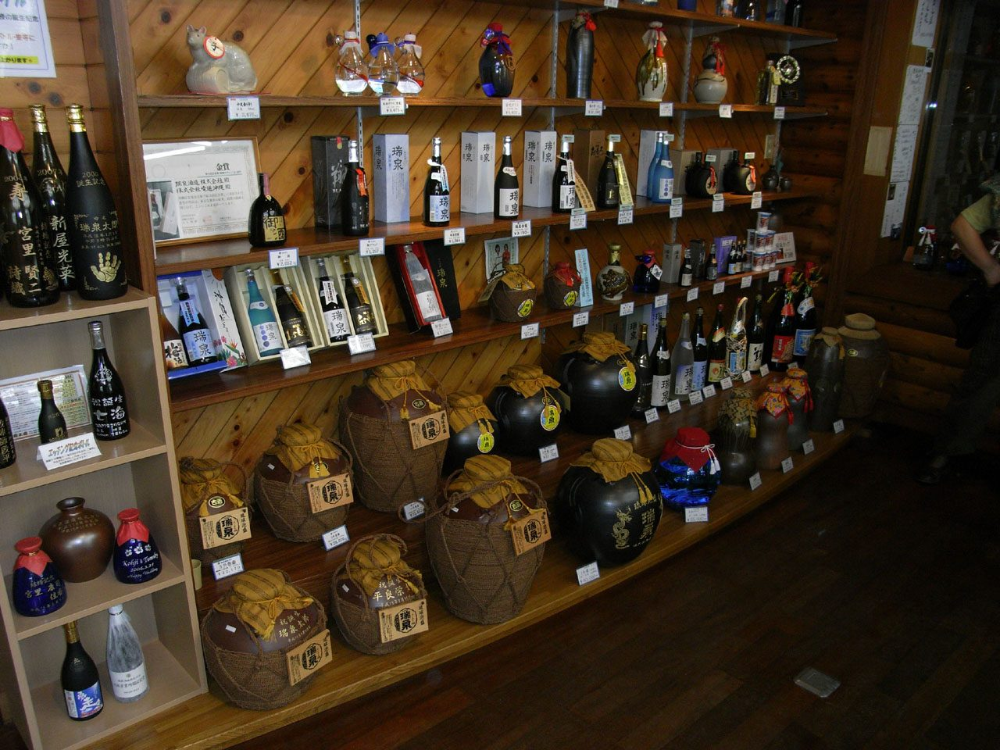
泡盛は、台所の調味料でもある
泡盛は飲むだけのお酒ではありません。1本目で見たように、ラフテーも、沖縄そばの三枚肉も、砂糖・醤油と一緒に泡盛で煮込みます。そばの卓上のコーレーグースも、島とうがらしを泡盛に漬けたもの。
つまり、沖縄料理を食べているあいだ、私たちはずっと泡盛の香りに触れています。まーちぬ家でラフテーを食べながら泡盛を飲めば、皿とグラスで同じお酒を味わっていることになります。
カラカラと、飲み方
泡盛を注ぐ沖縄の酒器がカラカラ。丸くふくらんだ胴に、細い注ぎ口がついた器です。名前の由来は、音から来たという説のほか、宜野湾にこんな民話も残ります。お酒好きのお坊さんが倒れない徳利を作ったところ評判になり、人々が「カラカラ（貸せ貸せ）」と言った、というものです。
飲み方は、水割り、ロック、ストレートといろいろ。古酒は少しずつ、まず香りから確かめる飲み方が似合います。まーちぬ家のような郷土料理の店では、同じ銘柄の「一般酒」と「古酒」を飲み比べると、寝かせた時間の違いが舌でわかります。
オリオンビール 南の星の名前
オリオンビールの会社は、アメリカ統治下の1957年5月18日に「沖縄ビール」として生まれました。創業者の具志堅宗精は、沖縄戦を生きのびた人。「沖縄の復興には、ものを作る産業が必要だ」と、沖縄で初めてのビール会社を立ち上げました。翌年、工場は名護に置かれます。
名前は、1957年11月1日の新聞で懸賞つきで公募されました。集まった約2,500の候補の中から選ばれたのが「オリオン」。選ばれた理由は、オリオン座は南の星で沖縄のイメージに合うこと、そして星は人々の夢や憧れを表すこと、とされています。1959年には、会社の名前も「オリオンビール株式会社」に改められました。
アメリカ統治下の沖縄で、沖縄の人が、沖縄の復興のために造ったビール。そう知ってから飲む一杯目は、少し味わいが違って感じられるかもしれません。
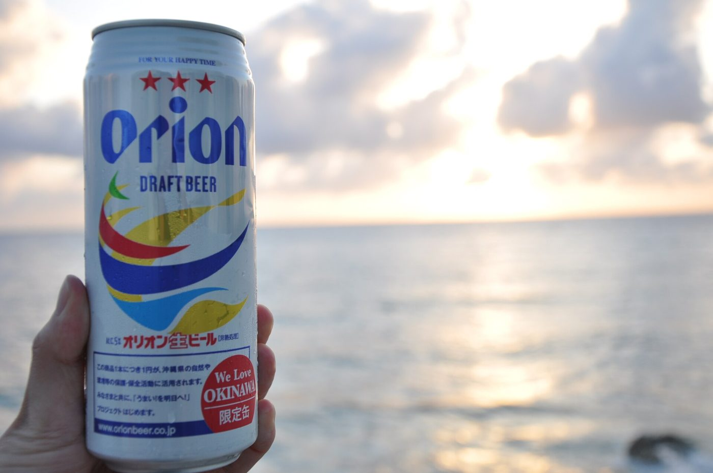
さんぴん茶とシークヮーサー
沖縄の食堂で出てくる、花の香りのお茶がさんぴん茶。中身はジャスミン茶です。「さんぴん」は、中国語でジャスミン茶を指す「香片（シャンピェン）」がなまったもの。これも中国との行き来が残した言葉です。庶民に広く飲まれるようになったのは、1901年に沖縄の商社が中国・福州に製造工場を置いてからとされます。水代わりに飲まれてきた、沖縄の日常のお茶です。
シークヮーサーは、沖縄北部のやんばるを中心に育つ小さな柑橘。名前は沖縄の言葉で「シー＝酸っぱい」「クヮーサー＝食べさせる」。和名は「ヒラミレモン」といいます。使い方は熟し具合で3通り。酸っぱい青い実は「青切り」として刺身や焼き魚にしぼり、熟した実は皮をむいて果物として食べ、残りはジュースなどになります。昔は、芭蕉布（ばしょうふ）の染み抜きや、繊維をやわらかくするのにも使われました。
この旅で会えるもの
- 10/25 首里の丘で、泡盛を造ってよかった3つの村「首里三箇」がこのあたりだったことを思い出そう
- 10/26 許田の道の駅で、緑のシークヮーサーを探そう
- 10/26 まーちぬ家で、一般酒と古酒を飲み比べよう
- 10/27 国際通りで、カラカラを手に取ってみよう
現地で探す3つ
- 泡盛のラベルの「古酒」「○年」の表示
- 食堂のテーブルに出てくる、さんぴん茶の香り
- 郷土料理の店の棚に並ぶ、古酒の甕や瓶
出典
- 15世紀にシャムから蒸留酒が伝来、日本最古の蒸留酒（と言われる）、首里三箇（赤田・崎山・鳥堀）：出典1 ／ 出典2
- 泡盛の名の初出1671年、4つの説、泡説が最も妥当：出典1
- 4つの特徴（米・黒麹・全麹仕込み・単式蒸留）、100年200年の古酒を家庭で育てられる：出典1
- タイ米は大正末期に輸入開始・昭和に定着、3つの理由：出典1
- 黒麹はクエン酸で雑菌を抑える：出典1 ／ 出典2
- 古酒＝3年以上、2015年8月から全量表示へ：出典1 ／ 出典2
- 仕次ぎ・親酒の方法：出典1 ／ 出典2
- カラカラの由来（音説・宜野湾の民話「貸せ貸せ」）：出典1
- オリオン：1957年5月18日設立、具志堅宗精、11月1日公募、名前の理由、1959年社名変更：出典1
- 約2,500の候補、翌年名護に工場：出典1 ／ 出典2
- さんぴん茶＝ジャスミン茶、香片が語源：出典1
- さんぴん茶は1901年の福州工場設置以降に普及（とされる）：出典1
- シークヮーサーの語源、ヒラミレモン、青切り・完熟・加工、芭蕉布：出典1
03 / 5分琉球王国の物語 海の国の450年とそのあと
この旅で役立つ場所
10/25 首里城公園（王国の都）／10/27 中城城跡（王国統一後の15世紀の舞台）・国際通り（戦後の「奇跡の1マイル」）・ジャッキーステーキハウス（アメリカ統治時代）／差替候補 今帰仁城跡・玉陵・勝連城跡
沖縄には、450年続いた「国」がありました。琉球王国です。
王さまがいて、首里城があり、中国や東南アジアと船で行き来して栄えた海の国。今回の旅で見る城も、食べる豚料理も、飲む泡盛も、たどっていくとこの国に行き着きます。
3つの国が1つになる（〜1429年）
14世紀の沖縄本島には、3つの国がありました。北の北山（ほくざん）、真ん中の中山（ちゅうざん）、南の南山（なんざん）。「三山（さんざん）時代」と呼ばれます。
それぞれの王は、石の城「グスク」を拠点にしていました。北山の王の城が、本部半島の今帰仁城（なきじんぐすく）です。
3つの国は、競うように中国（明）へ使いを送りました。明との正式なつきあいが始まったのは1372年。中国の皇帝にみつぎ物をおさめ、お返しに品物を受け取る「進貢」です。これが琉球の豊かさの元手になります。
中山の尚巴志（しょうはし）が、1416年に北山を下し、1429年までに3つの国をまとめて、琉球は初めて1つの王国になりました。都は首里。ここから1879年まで、450年の王国が続きます。
海の国「万国津梁」（15〜16世紀）
王国の強みは、海でした。中国、日本、朝鮮、東南アジアの国々のあいだを船で結び、ある国で仕入れた品を別の国へ運ぶ「中継貿易」で栄えます。
1458年に造られ、首里城正殿にかけられていた鐘には、こんな意味の言葉が刻まれています。
「琉球は南の海のよいところにあり、中国と日本のあいだにある蓬莱の島。船で万国の架け橋（津梁）となり、国には宝物が満ちている」
これが万国津梁（ばんこくしんりょう）。琉球の人たちの、自分たちの国への誇りが込められた言葉です。
世界遺産の説明でも、琉球王国は「中国・朝鮮・日本・東南アジア諸国との広い交易を経済の基盤とした国」と紹介されています。人口も土地も小さな島国が、海の道の真ん中にいることを武器にして生きた。それが琉球王国でした。
泡盛の蒸留の技がシャム（タイ）から伝わったのも、この交易の時代とされます。
城の主たちの争い（15世紀）
統一されたあとも、王国は安泰ではありませんでした。1458年には、中城城の護佐丸と、勝連城の阿麻和利という2人の実力者が相次いで滅びる事件が起きます（5本目「グスクの見方」）。10/27に訪れる中城城跡は、その舞台です。
1469年、王の家は第一尚氏から第二尚氏に代わります。首里城を居城にしたこの第二尚氏の王家が、1879年まで400年あまり続きました。
中国の「冊封」と、日本の薩摩（1609年〜）
琉球の王は、代がわりのたびに中国の皇帝から「あなたを琉球国王と認める」という使者を迎えました。これを冊封（さっぽう）、使者を冊封使（さっぽうし）と呼びます。首里城の「歓会門」は、この冊封使たちを歓迎する門として名づけられました。豚料理やお菓子など、冊封使をもてなすために磨かれた文化もたくさんあります。
ところが1609年、薩摩の島津氏が琉球に攻め込みます。王は捕らえられて江戸で徳川家康らに会わされ、琉球は薩摩の支配を受けることになりました。
それでも王国は、中国との冊封の関係を続けます。表では中国の冊封を受ける独立国、裏では薩摩と江戸幕府の支配下。琉球は、2つの大国のあいだで、とても微妙な立場を生きることになります。
王国の終わり（1879年）
明治になると、日本政府は琉球を日本の一部にする手続きを進めます。1872年に「琉球藩」とし、1879年3月27日、政府の役人が警官と兵士あわせて500人以上を連れて首里城に入り、城の明け渡しを命じました。4月、琉球藩は廃止されて沖縄県となります。この一連のできごとは「琉球処分」と呼ばれます。
450年続いた王国は、ここで終わりました。
首里城のすぐ近くには、王家の墓玉陵（たまうどぅん）が残っています。王家の墓所として、首里城跡や中城城跡と並んで世界遺産の一つになっている場所です（4本目「首里城の歩き方」で紹介）。
沖縄戦（1945年）
1945年3月26日、アメリカ軍が慶良間諸島に上陸し、4月1日には沖縄本島に上陸しました。日本で、住民を巻き込んだ大規模な地上戦が行われた場所です。戦闘は3か月以上続き、沖縄の住民約9万4千人、日本軍約9万4千人、アメリカ軍約1万2千5百人が亡くなりました。首里城も、1945年5月の攻撃で焼け落ちています。
沖縄県は、組織的な戦闘が終わったとされる6月23日を「慰霊の日」とし、毎年、戦争で亡くなったすべての人を悼み、平和を祈っています。旅の途中で見る首里城の石垣や守礼門は、その多くが戦後に一から積み直されたものです。
アメリカ世（ゆー）と復帰（1945〜1972年）
戦後、沖縄は日本から切り離され、27年間アメリカの統治下に置かれました。基地がつくられ、車はアメリカと同じ右側通行でした。この時代に、ステーキやタコライス、ブルーシールのアイスが沖縄の味になりました（1本目「沖縄ごはんの読み方」）。
焼け野原になった那覇で、戦後いちはやく復興したのが国際通りです。1948年にできた映画館「アーニー・パイル国際劇場」にちなんで名づけられ、その急速な発展ぶりは、1949年に訪れたアメリカの新聞記者に「奇跡の1マイル」と呼ばれたと言われます。長さは約1.6km、ちょうど1マイルほどです。
1972年5月15日、沖縄は日本に復帰しました。その20周年にあたる1992年11月、首里城の正殿は戦後初めてよみがえります。首里城は、沖縄の戦後の歩みと重なる建物でもあります。
車が左側通行に切り替わったのは、復帰から6年後の1978年7月30日。この日は「ナナサンマル（730）」と呼ばれます。前の晩の22時にサイレンが鳴って県内の車の通行が止められ、翌朝6時までに、人は右・車は左への切り替え作業が終えられました。
この旅で会えるもの
- 10/25 首里城で、守礼門の「守禮之邦」と、供屋の万国津梁の鐘（複製）を見よう
- 10/27 中城城跡で、1440年に城主になった護佐丸の時代の石垣に触れよう（5本目で詳しく）
- 10/27 国際通りで、「奇跡の1マイル」を端から端まで歩いたつもりになってみよう
- 10/27 ジャッキーステーキハウスで、ドル表記の残る時代を感じよう
現地で探す3つ
- 守礼門の額の4文字「守禮之邦」
- 首里城の供屋にかかる、万国津梁の鐘の複製
- ジャッキーステーキハウスに残る、英語とドルで書かれた創業当時のメニュー
出典
- 14世紀の三山時代、1429年に第一尚氏のもと統一、1469年第二尚氏、1879年まで居城、1945年5月に艦砲射撃で壊滅、2019年10月火災：出典1
- 1372年に明との進貢開始、1609年薩摩侵攻・尚寧王と家康：出典1
- 1416年に北山滅亡、今帰仁城跡の年代・監守1665年まで：出典1 ／ 出典2
- 1429年統一、1609年、1879年、27年間の米国統治、1972年5月15日復帰：出典1
- 万国津梁の鐘：1458年、銘文の意味、供屋に複製、本物は県立博物館：出典1 ／ 出典2
- 琉球王国は広域交易を経済基盤とした：出典1
- 歓会門は冊封使を歓迎する門：出典1
- 守禮之邦の由来（1579年の明皇帝の言葉）：出典1
- 1879年3月27日首里城明け渡し（警官・兵士あわせ約560人）、4月に沖縄県：出典1 ／ 出典2
- 玉陵は王家の墓所で世界遺産の構成資産：出典1
- 沖縄戦：3/26慶良間・4/1本島上陸、3か月以上、住民9万4千・日本軍9万4,136・米軍1万2,520、6月23日慰霊の日：出典1
- 1458年の護佐丸・阿麻和利：出典1
- 国際通り：アーニー・パイル国際劇場（1948年）、1950年に名称、1949年「奇跡の一マイル」、1.6km：出典1
- 1972年5月15日復帰：出典1
- 1992年11月3日、復帰20周年に正殿復元：出典1
- 1978年7月30日「730」、前夜22時〜翌6時の切替作業：出典1
04 / 5分首里城の歩き方 門をくぐるたびに王国へ近づく
この旅で役立つ場所
10/25 首里城公園（守礼門→歓会門→瑞泉門・龍樋→広福門・供屋→奉神門→御庭と正殿の外観）／差替候補 玉陵
首里城は、正殿にたどり着くまでに、門をいくつもくぐる城です。門ごとに名前があり、名前ごとに意味があります。
2026年10月、焼失から7年たった正殿は、外側がほぼ完成した姿で私たちを待っています。中に入れるのは11月23日から。つまり私たちは、「完成の直前の首里城」を見る、ちょっと珍しい旅人です。
守礼門 「礼を守る国」の看板
最初に出会うのが守礼門。1527〜1555年ごろ、尚清王の時代に建てられました。中国風の「牌楼（ぱいろう）」という形で、2000円札の絵にもなった門です。
額の4文字は「守禮之邦（しゅれいのくに）」。「琉球は礼節を重んじる国」という意味です。1579年、明の皇帝が「琉球は守礼の国と呼ぶにふさわしい」と言ったことに由来します。
守礼門は1945年の沖縄戦で壊されました。首里で戦後いちばん最初に再建されたのがこの門で、今の門は1958年のものです。
歓会門 「ようこそ」の門
城壁の中への最初の正門が歓会門（かんかいもん）です。「歓会」は「歓迎する」という意味。中国の皇帝の使い「冊封使」をはじめ、遠来の客を迎える門でした。
石のアーチの上に木の櫓（やぐら）がのる形は、日本の城とも中国の宮殿とも違う、琉球の門の姿です。
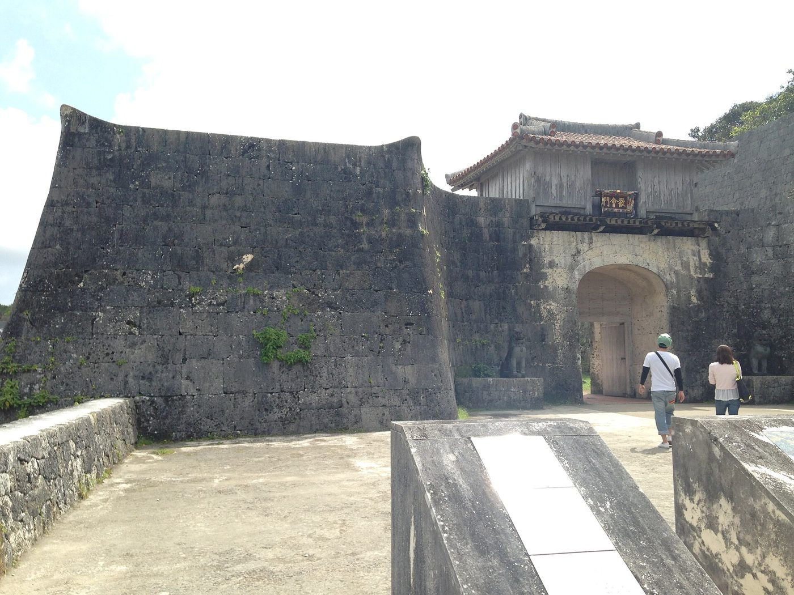
瑞泉門と龍樋 城でいちばん古い「本物」
石段を上ると瑞泉門（ずいせんもん）。1470年ごろにできた門で、歓会門ができるまでは、この門が首里城の正門だったと言われます。「瑞泉」は「立派な、めでたい泉」という意味で、門の手前右にある湧き水龍樋（りゅうひ）にちなみます。
龍樋の水は、龍の頭の形をした石彫りの口から流れ出ています。この龍の頭は1523年に中国から運ばれたもの。沖縄戦で一部が壊れましたが修理され、同じ場所に戻されました。首里城にある彫刻の中で、当時のままのものはこれだけです。
龍樋の水は城の飲み水であり、冊封使が来たときには、彼らが泊まる那覇の宿舎まで届けられました。冊封使たちはこの水の清らかさをほめたたえ、その言葉を刻んだ石碑が龍樋のまわりに7つ立っています。「冊封七碑」です。
石垣はなぜ曲がっているの？
歩きながら、石垣を見てください。角がありません。どこも丸く、屏風のようにうねっています。
首里城の石垣は、沖縄本島南部でたくさんとれる琉球石灰岩。丘の地形に合わせて、角をすべて曲面にして積んでいます。この曲線が、日本の城にも中国の宮殿にもない、グスクならではの美しさです。
積み方も見比べられます。四角く切った石を横にそろえて積むのが布積み。五角形や六角形に切った石を、亀の甲羅のようにかみ合わせるのが相方積み（あいかたづみ）。相方積みのほうが手間がかかり、頑丈で、新しい技術と言われます（5本目「グスクの見方」で詳しく）。
正殿の赤は、どこから来た赤？
首里城の正殿の赤は、弁柄（べんがら）という赤い顔料の色です。弁柄は酸化鉄、つまり「さび」の仲間の赤。熱にも水にも強く、湿気の多い沖縄の建物を守る色でもあります。
令和の復元で話題になったのが、久志間切弁柄（くしまぎりべんがら）です。1846年の記録に、正殿の修理のため、久志間切（今の名護市久志）から弁柄を取り寄せよ、と書かれていました。研究の結果、それは沖縄本島北部の水辺にいる鉄バクテリアがつくる赤茶色の沈殿物からつくられたものらしい、とわかります。
平成の復元（1992年）では、この弁柄の正体がわかっていませんでした。令和の復元では、この沖縄産の弁柄を43kg以上用意し、桐油で溶いて仕上げに塗っています。より深く、濃い「琉球の赤」を取り戻す試みです。
正殿の前の龍は、向き合っている
正殿の正面には、石の龍の柱大龍柱（だいりゅうちゅう）が左右に立ちます。この2本がどちらを向くかは、長く議論になってきました。お互いに向き合う「相対向き」か、2本とも正面を向く「正面向き」か。
令和の復元では、1768年や1846年の古い図面で向き合って描かれていることなどから、相対向きが採用されました。正面向きが正しいという意見も今なお残っていて、「どちらが本当の姿か」は今も語られるテーマです。
2019年の火災と「令和の復元」
首里城は、これまでに何度も焼けては建て直されてきました。1945年の沖縄戦で全焼したあと、1992年に正殿がよみがえります。そして2019年10月の火災で、正殿など主な建物が焼け落ちました。
1992年の正殿の復元は、沖縄の日本復帰20周年に合わせたものでした。そして2000年、首里城跡は「琉球王国のグスク及び関連遺産群」の一つとして世界遺産になります。世界遺産に登録されたのは、地下に残る遺構を含む「城跡」で、建物そのものは復元です。
令和の復元は、工事の様子を公開しながら進める「見せる復興」が特徴です。正殿を覆っていた大きな仮の屋根（素屋根）は2025年10月末までに取り外され、外観は完成しています。
2026年3月時点の公式案内では、今見られるものはこうです。
- 高台見学デッキ：正殿をこれまでより高い位置から見渡せる新しいデッキ。屋根の飾りも近くに見えます
- 復興展示室：火災のあとに残った獅子瓦、大龍柱や柱の試作品、久志間切弁柄の解説
- 世誇殿（よほこりでん）：正殿の飾りの試作品や、礎石・屋根の龍の飾りの模型
正殿の完成式は11月22日、一般公開は11月23日の正午から。私たちが見るのは、その約1か月前の姿です。
城のそばの王家の墓、玉陵
守礼門から西へ約200m歩くと、玉陵（たまうどぅん）があります。1501年、尚真王が父・尚円王のために造った、第二尚氏の王家の墓です。石灰岩を積んだ屋根つきの墓室が3つ並び、その左右を石の獅子が守っています。沖縄に今も残る「破風墓（はふばか）」の原型とされ、首里城跡とは別に、これも世界遺産の一つです。
この旅で会えるもの
- 10/25 守礼門の額「守禮之邦」を見上げよう
- 10/25 龍樋で、500年前の龍の口から落ちる水を見よう
- 10/25 高台見学デッキから、久志間切弁柄の赤と、向き合う2本の大龍柱を確かめよう
現地で探す3つ
- 瑞泉門の石段の両わきに並ぶ「冊封七碑」
- 布積みと相方積み。四角い石と、亀の甲羅のような石
- 広福門の前の供屋にかかる、万国津梁の鐘の複製
出典
- 守礼門1527〜55年・尚清王・牌楼、1579年の由来、1945年破壊・戦後最初に再建・1958年完成：出典1 ／ 出典2
- 2000円札に守礼門（2000年7月19日発行）：出典1 ／ 出典2
- 園比屋武御嶽石門1519年・安全祈願の礼拝所・世界遺産：出典1 ／ 出典2
- 歓会門：「歓迎する」、第一正門、石のアーチ＋木造櫓：出典1
- 瑞泉門1470年頃、「立派な、めでたい泉」、歓会門以前は正門（と言われる）：出典1 ／ 出典2
- 龍樋の龍頭は1523年中国から、唯一当時のもの、冊封使の飲料水、七つの石碑：出典1
- 石垣：琉球石灰岩、曲面処理、布積み・相方積み、東のアザナ：出典1 ／ 出典2
- 弁柄の性質、久志間切弁柄（1846年記録・鉄バクテリア・43kg以上・桐油）：出典1 ／ 出典2
- 18世紀から赤瓦、鐘の時代は板葺き、復元年代設定のため鐘は掛けない：出典1
- 大龍柱は相対向き（1768年寸法記・1846年御普請絵図帳）、正面向き説も：出典1 ／ 出典2
- 1992年復元、2000年世界遺産、世界遺産は地下遺構で復元建物は構成資産ではない：出典1 ／ 出典2
- 素屋根は2025年10月末までに撤去、外観完成：出典1
- 高台見学デッキ・復興展示室・世誇殿の展示（2026年3月末時点）：出典1 ／ 出典2
- 11月22日完成式、11月23日正午から一般公開：出典1 ／ 出典2
- 玉陵：守礼門から約200m西、1501年尚真王、3つの墓室・獅子、破風墓の原型：出典1 ／ 出典2
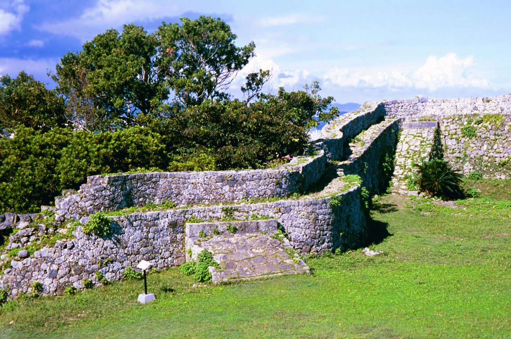
05 / 5分グスクの見方 城は、祈りの場所でもあった
この旅で役立つ場所
10/27 中城城跡（3種類の石積み・拝所・ペリーの記録）／10/25 首里城公園（園比屋武御嶽石門・石垣）／差替候補 今帰仁城跡・勝連城跡・斎場御嶽
沖縄では、城を「グスク」と呼びます。石垣があり、見晴らしのよい丘の上にあるので、日本の城のような「戦いの砦」を思い浮かべがちです。
でも、グスクの中を歩くと、あちこちに小さな石の囲いや香炉があります。グスクは、戦うための場所であると同時に、神に祈る場所でもありました。
グスクの石垣の読み方
グスクの石垣は、主にサンゴ由来の琉球石灰岩でできています。そして、曲線が多い。これは世界遺産の登録でも「琉球独自の特色」とされた点です。
積み方は大きく3つあります。時代とともに、野面積み→布積み→相方積みと変わっていったと考えられています。
- 野面積み（のづらづみ）：自然の石を、ほぼそのまま積む。いちばん古い積み方
- 布積み（ぬのづみ）：石を四角く切りそろえ、横の列をそろえて積む。豆腐を並べたような見た目
- 相方積み（あいかたづみ）：石を五角形・六角形に切り、互いにかみ合わせて積む。亀の甲羅のような模様。加工に手間がかかるぶん、いちばん頑丈
中城城跡 3つの積み方が1か所で見られる城
10/27に訪れる中城城跡（なかぐすくじょうあと）は、6つの郭（くるわ＝石垣で囲まれた区画）が連なる城です。城壁に立つと、東に中城湾（太平洋）、西に東シナ海が見えます。
ここは、3つの積み方を一度に見比べられる城です。
- 南の郭・西の郭：布積み。14世紀後半にできた、古いほうの区画です
- 三の郭・北の郭：相方積み。1440年に城主になった護佐丸（ごさまる）が増築した区画です
- ところどころに、自然の石に近い野面積みも残ります
つまり、布積みの壁から相方積みの壁へ歩くと、数十年分の技術の進歩をまたぐことになります。
護佐丸と阿麻和利の物語
護佐丸は、王の命令で読谷の座喜味（ざきみ）城から移ってきた武将です。中城で城の守りを固めたのは、東の勝連城にいた実力者阿麻和利（あまわり）を見張るためだったと言われます。
1458年、中城は阿麻和利の率いる王府軍に攻められ、護佐丸は自ら命を絶ちました。中城城跡の公式サイトは、旧暦8月15日、月見の宴のさなかの急襲だったと伝えています。その阿麻和利も、同じ年のうちに王府に滅ぼされたと伝えられます。琉球史でいちばん有名な謎の事件「護佐丸・阿麻和利の乱」です。
勝連城跡も、中城城跡と同じく世界遺産の一つです。護佐丸の城と阿麻和利の城、2つの城が同じ世界遺産の仲間として残っているのも、歴史のめぐり合わせです。
ペリーもほめた石垣
1853年、日本に来る前に琉球へ立ち寄ったペリー艦隊の調査隊は、中城城跡を測量し、スケッチを残しました。画家のハイネは4枚のスケッチを残し、『日本遠征記』には、その石造りを「賞賛すべき構造」と書いています。中城城跡は2000年に世界遺産、2006年には「日本100名城」にも選ばれました。
今帰仁城跡 万里の長城のような石垣
差し替え候補の今帰仁城跡（なきじんじょうあと）は、三山時代の北山の王の城です。13世紀末に築き始められ、14〜15世紀初めに今の形になりました。
見どころは、全長1.5kmにおよぶ石垣。自然の石をそのまま積む野面積みで、山の地形に沿って屏風のようにうねります。1416年に中山の尚巴志に滅ぼされたあとは、王府から派遣された「北山監守」の城になり、1665年に監守が引き上げたあとも、祈りの場として大切にされてきました。
グスクの中の「御嶽」
グスクの中には、必ずといっていいほど御嶽（うたき）があります。御嶽は、南西諸島に広く分布する「聖地」の総称。神がいる、あるいは神が訪れると考えられた場所で、村の祭りや祈りが行われてきました。
今帰仁城跡には、琉球の神話と関わりの深い城の守り神を祀った御嶽があります。中城城跡にも、首里城を遠くから拝む場所や雨乞いの御嶽など、拝所がいたるところにあります。
首里城でも、守礼門のそばの園比屋武御嶽石門は、王が出かける前に祈った場所でした。世界遺産「琉球王国のグスク及び関連遺産群」の9つのうち、2つは城ではなく、この石門と斎場御嶽という「聖地」です。
斎場御嶽 琉球王国でいちばん大切な聖地
斎場御嶽（せーふぁうたき）は、琉球の国づくりの伝説にも出てくる、王国最高の聖地です。
ここでは、王国の最高位の神女聞得大君（きこえおおきみ）の就任の儀式が行われました。聞得大君は、国王と王国全体を霊的に守る存在です。首里から行列を組んでここまで下り、儀式を受けたと伝えられます。
中には6つの神域（イビ）があり、国王もここを巡って、国の繁栄や五穀豊穣、航海の安全を祈りました。海の国らしい祈りです。イビの名前もおもしろいのです。
- 大庫理（うふぐーい）：「大広間」の意味。首里城の正殿2階と同じ名前です
- 寄満（ゆいんち）：「台所」の意味。豊かな恵みが寄り満ちる場所とされます
- 三庫理（さんぐーい）：大きな岩が三角形のすき間をつくる場所。今は入り口から奥へは立ち入れません
国の大切な祭りのときには、「神の島」と呼ばれる久高島から白い砂を運び入れ、御嶽に敷きつめたそうです。
この旅で会えるもの
- 10/27 中城城跡で、南の郭の布積みと、三の郭の相方積みを見比べよう
- 10/27 中城城跡の城壁から、太平洋と東シナ海の両方を探そう
- 10/25 首里城で、園比屋武御嶽石門を「門ではなく祈りの場」として見てみよう
現地で探す3つ
- 亀の甲羅のような相方積みの石垣
- グスクの中の小さな石の囲いと香炉（拝所）
- 石垣の角。どこも丸く削られています
出典
- グスクは珊瑚石灰岩・曲面を多用した琉球独自の特色、9つの構成資産：出典1
- 積み方の変遷（野面→布→相方）、相方積みが新しく丈夫：出典1 ／ 出典2
- 中城：6つの郭、布積み（南・西）、あいかた積み（三・北）、拝所、眺望、ペリー「賞賛すべき構造」：出典1
- 中城：14世紀後半に南・西・一・二の郭、護佐丸が三・北の郭を増築、1440年移封、1458年旧暦8/15の急襲、ハイネのスケッチ4枚、2000年世界遺産、2006年100名城：出典1
- 一部に野面積み：出典1
- 阿麻和利を見張る目的（と言われる）、阿麻和利の滅亡：出典1
- 今帰仁城：13世紀末〜15世紀初、1.5km・野面積み・屏風状、1416年、監守1665年、御嶽：出典1
- 御嶽とは・斎場御嶽は最高の聖地・六つのイビ・国王の祈願・三庫理奥は立入不可・久高島の白砂・服装・持ち出し禁止：出典1
- 聞得大君・御新下り・大庫理＝正殿2階の名・寄満＝台所：出典1 ／ 出典2
- 園比屋武御嶽石門は国王の安全祈願の礼拝所：出典1
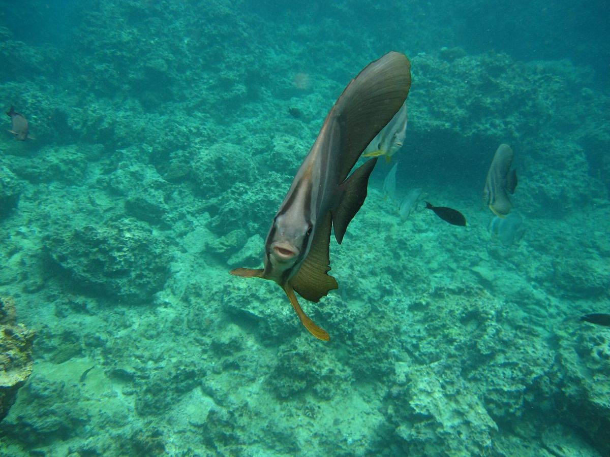
06 / 5分海の色と生きものの話 美ら海の前に読む
この旅で役立つ場所
10/26 古宇利大橋（海の色・伝説の島）・沖縄美ら海水族館（黒潮の海・サンゴの海）／10/25 瀬長島ウミカジテラス（夕日と海）／差替候補 備瀬のフクギ並木
沖縄の海は、場所によって色がまるで違います。橋の下は明るいエメラルドグリーン、沖は深い藍色。
その色の違いには理由があります。そして、その藍色の沖を流れる大きな海流こそ、美ら海水族館の大水槽のテーマ「黒潮」です。
黒潮は、なぜ「黒い」の？
黒潮は、メキシコ湾流と並ぶ世界最大級の暖かい海流です。水温は平均20〜30℃。この暖かさのおかげで、南西諸島ではサンゴ礁が育ち、たくさんの生きものが行き来します。
「黒」の理由は、きれいすぎるからです。黒潮の水は栄養分が少なく、プランクトンもわずか。濁りがないので光をはね返すものがなく、深く吸い込まれて、青黒い色に見えます。「黒い潮」は、透明度の高さのしるしです。
エメラルドグリーンの正体は「白い砂」
では、岸に近い海が明るい緑色なのはなぜでしょう。
鍵は、海の底の白い砂です。沖縄の白い砂の多くは、サンゴのかけらや貝殻など、石灰質のものが砕けてできています。浅い海では、太陽の光が白い底まで届いてはね返り、澄んだ水を通って、明るい青緑に見えます。「古宇利ブルー」と呼ばれる古宇利島まわりの海の色も、この「浅くて底が白い海」の色です。
サンゴ礁に囲まれた浅く穏やかな海を、沖縄の言葉でイノーと言います。昔から小魚や貝、海藻がとれる「海の畑」として、暮らしを支えてきた場所です。
古宇利島 沖縄版アダムとイブの島
古宇利大橋は、2005年2月8日に開通した長さ1,960mの橋です。それまで古宇利島へは船で渡っていました。
古宇利島には、人類がここから始まったという言い伝えが残ります。昔、この島に男女が2人きりで暮らしていました。2人は天から降ってくる餅を食べて、何の心配もなく暮らしていましたが、やがて餅を蓄えるようになると、餅は降ってこなくなった、と伝えられます。この2人の子孫が、琉球の人々の祖先になったという話です。話にはいくつもの型があり、浜辺でジュゴンのつがいを見て恥じらいを知った、と語るものもあります。
島は半径約1kmの小さな島で、ぐるりと一周しても約8km。それでも「神の島」とも呼ばれ、今も海神祭（ウンジャミ）などの祭りが続いています。そして「こうり」がなまった「くい」から、「恋島（くいじま）」という呼び名もあります。
美ら海水族館 「黒潮の海」の見方
美ら海水族館の大水槽「黒潮の海」は、沖縄の沖合の海をそのまま切り取ったような水槽です。
- 水の量は7,500㎥。深さ10m、幅35m、奥行き27m
- 正面のアクリルパネルは、高さ8.2m、幅22.5m、厚さ60cm
- 約80種の生きものが泳いでいます
主役はジンベエザメ。成長すると10〜12mになる、世界最大の魚です。名前は、体の模様が夏に着る「甚平（じんべえ）」に似ているから、と言われます。美ら海水族館のジンベエザメは、飼育の長さで世界記録を更新中。2026年3月で31年になりました。
これだけ大きいのに、食べるのはプランクトンなどの小さな生きものだけ。穏やかなサメです。
実は、わかっていないことの多い魚でもあります。卵ではなく子どもを産む「胎生」だとわかったのは、1995年。台湾でとれた母ザメのお腹から、約300匹の赤ちゃんが見つかったのがきっかけでした。
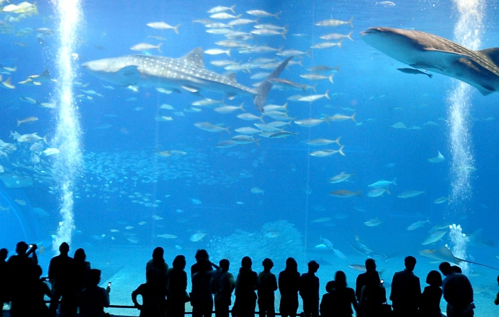
マンタの赤ちゃんは、世界初
同じ水槽を泳ぐナンヨウマンタにも注目です。美ら海水族館は2007年、飼育しているナンヨウマンタの出産に世界で初めて成功しました。2024年8月には、体が黒い「ブラックマンタ」の赤ちゃんも世界で初めて生まれています。
悠々と泳ぐマンタの中に、この水槽で生まれた個体がいるかもしれない。そう思って見ると、ただの「大きなエイ」ではなくなります。
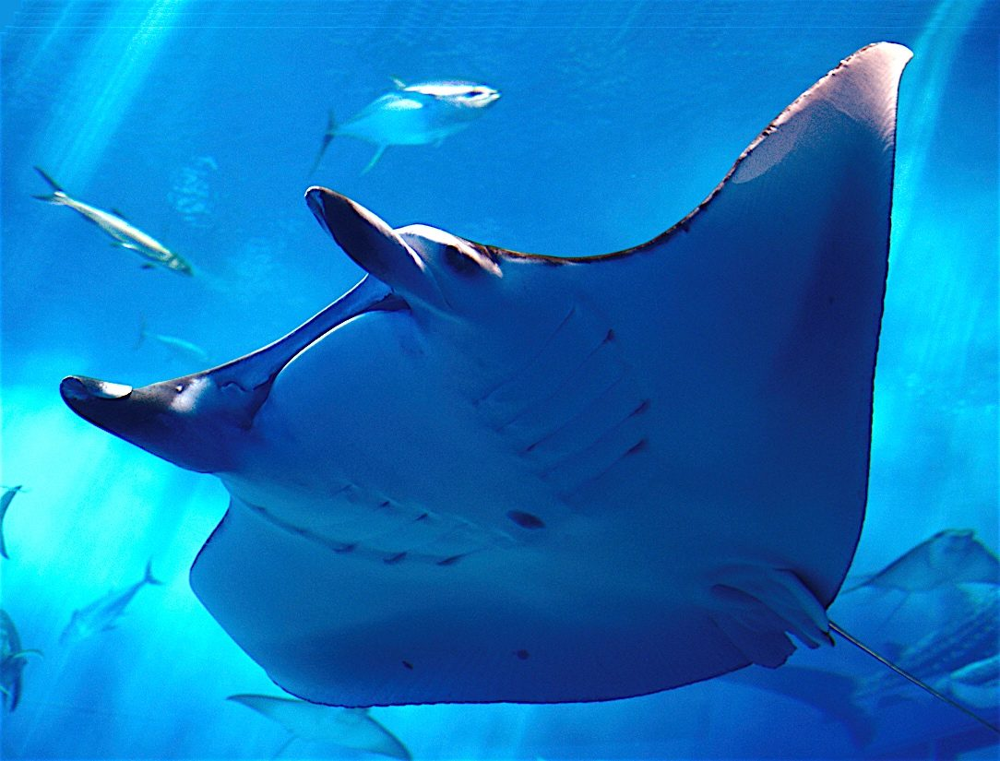
サンゴの水槽には、屋根がない
水族館は4階から始まり、3階の「サンゴ礁への旅」でイノー（サンゴ礁の浅い海）やサンゴに出会い、2階・1階へ下りるにつれて黒潮の海、深海へと進む造りです。階段を下りる順番が、岸から沖へ、浅い海から深い海へと出ていく旅になっています。
大水槽の手前にある「サンゴの海」の水槽は、屋根がありません。沖縄の強い日ざしを直接取り込み、目の前の海からくみ上げた新しい海水を流し続けています。約80種・420群体の、サンゴ礁をつくるサンゴが育っています。
外の海の光と水で育つ水槽。ここで見るサンゴは、古宇利島の海の色をつくっている、白い砂のもとでもあります。
備瀬のフクギ並木 風と塩から家を守る木
美ら海水族館のすぐ近くにある備瀬（びせ）の集落は、家々がフクギという木で囲まれています。海沿いの村を、強い風と、潮風の塩から守るための防風林・防潮林です。沖縄総合事務局の資料では、その数は約1万4千本。海沿いの備瀬崎まで、約1kmの並木道が続きます。
中には、樹齢300年と推定される古い木もあると言われます。台風の多い島で、何世代もかけて植え、守ってきた「暮らしの知恵の森」です。
この旅で会えるもの
- 10/26 古宇利大橋の上から、エメラルドグリーンと藍色の境目（リーフ）を探そう
- 10/26 美ら海水族館の「黒潮の海」の前に立ち、厚さ60cmのアクリルの向こうの7,500㎥を感じよう
- 10/26 屋根のない「サンゴの海」の水槽で、外の光で育つサンゴを見よう
- 10/25 瀬長島で夕日を見ながら、目の前の海が東シナ海だと思い出そう
現地で探す3つ
- 古宇利大橋から見る、海の色の境目
- 「黒潮の海」を泳ぐナンヨウマンタ。水族館生まれの子がいるかもしれません
- ジンベエザメの体の、甚平のような白い斑点
出典
- 黒潮は世界最大の暖流の一つ、平均20〜30℃、サンゴ礁が発達：出典1
- 黒潮の名は貧栄養・透明度が高く青黒く見えるため：出典1 ／ 出典2
- 白い砂はサンゴや貝殻の石灰質、浅い海で光を反射してエメラルドグリーン：出典1
- イノー＝サンゴ礁に囲まれた浅い海（礁池）、「海の畑」：出典1 ／ 出典2
- 古宇利大橋 2005年2月8日開通・1,960m：出典1 ／ 出典2
- 人類発祥伝承、神の島、海神祭（ウンジャミ）、架橋前はフェリー：出典1
- 伝説の内容（餅・ジュゴン、型が複数）：出典1
- 恋島（くいじま）、半径約1km・周囲約8km：出典1
- 黒潮の海：7,500㎥・深さ10m幅35m奥行27m、約80種、アクリル8.2m×22.5m×60cm：出典1 ／ 出典2
- ジンベエザメ：10〜12m、甚平由来、2026年3月で31年、プランクトン食、約100Lの海水ごとオキアミ、1995年に胎生判明：出典1
- 給餌 9:30（マンタ）・15:00/17:00：出典1
- ナンヨウマンタ2007年世界初の飼育下出産、2024年8月ブラックマンタ出産：出典1 ／ 出典2
- サンゴの海：屋根なし・自然光・かけ流し・約80種420群体：出典1
- 館内は4階→3階サンゴ礁→2・1階黒潮・深海：出典1
- フクギ：防風・防潮、13,870本、備瀬崎まで約1km、推定樹齢300年：出典1 ／ 出典2 ／ 出典3
07 / 5分手仕事とお土産の目利き 泡の入ったグラスが「当たり」の理由
この旅で役立つ場所
10/25 琉球ガラス村（グラス選び）／10/27 国際通り（御菓子御殿・わしたショップでお土産）／差替候補 壺屋やちむん通り
琉球ガラスのグラスをよく見ると、小さな泡が入っていることがあります。ふつうのガラス製品なら「不良品」。でも琉球ガラスでは、それが持ち味です。
沖縄の手仕事には、戦争や貧しさ、暑さの中で「あるもので工夫した」歴史が詰まっています。背景を知ると、お土産売り場が博物館に見えてきます。
琉球ガラス コーラの瓶から生まれたグラス
沖縄には戦前から小さなガラス工場がありましたが、戦争で失われました。原料もない戦後、職人たちが目をつけたのが、アメリカ軍の基地から出る空き瓶です。コーラやビール、牛乳の瓶を洗って砕き、溶かして、もう一度グラスに吹き直しました。
ところが、はがしきれなかったラベルなどが混ざって、できあがったガラスには泡が入り、厚みもふぞろいになりました。本来なら欠点です。でもそれが、米兵や観光客には「手づくりの味」として喜ばれました。泡は、琉球ガラスの個性になったのです。
色も、もとの瓶の色から生まれました。茶色はビール瓶、淡い水色は一升瓶、緑はジュースの瓶。泡盛の瓶は淡いブルーに、オリオンビールの瓶はやわらかい茶色に生まれ変わる、と紹介されています。琉球ガラスは1998年に沖縄県の伝統工芸品に指定されました。
琉球ガラス村での見方
琉球ガラス村は、糸満にある日本最大の琉球ガラス工房です。国が認める「現代の名工」の職人も働いています。今は、再生ガラスと新しい原料のガラスの両方が使われています。
グラスを選ぶときは、3つを見てください。
- 泡：光に透かして、泡の入り方を見る。同じ形でも1つずつ違います
- 厚み：手に持って、口あたりの厚さと重さを確かめる。厚めのものは、ぽってりとした琉球ガラスらしさがあります
- 色：窓の光と店内の光で色が変わります。家の食卓の光を思い浮かべて選ぶと失敗しません
やちむん 魚が笑う器
沖縄の言葉で焼き物はやちむん。「やち」は焼き、「むん」は物です。
代表は那覇の壺屋焼（つぼややき）。1682年、琉球王府が島のあちこちにあった3つの窯場を、今の那覇・壺屋に集めたのが始まりです。釉薬をかけない素焼きの荒焼（あらやち）で水甕や酒甕を、釉薬をかけて絵付けした上焼（じょうやち）で皿や碗をつくってきました。
明治以降、本土から安い焼き物が入ってきて壺屋焼は苦しい時代を迎えますが、大正から昭和にかけて、柳宗悦や浜田庄司らの民芸運動が壺屋焼を全国に紹介し、その素朴で力強い美しさが見直されました。
戦後、那覇の町なかで薪の窯から出る煙が問題になり、多くの窯がガスや灯油の窯に切り替えたり、北の読谷村へ移ったりしました。読谷には、いくつもの工房が一緒に使う大きな「登り窯」があります。助け合って窯を使う、沖縄の言葉でいう「ゆいまーる（助け合い）」の窯です。
模様にも名前があります。
- 線彫（せんぼり）：細い道具で線を彫る技法。魚を彫った魚紋は定番の柄です
- イッチン：スポイトで化粧土や釉薬を盛り上げて描く技法
- 赤絵・染付：色の釉薬で絵を描く技法
魚紋で有名なのが、沖縄で初めて人間国宝（1985年）になった陶芸家、金城次郎です。笑っているように見えるユーモラスな魚が、彼の作品の代名詞です。
シーサー 口を開けるか、閉じるか
屋根や門の上から町を見張るシーサー。ルーツは中国の獅子像で、さらにさかのぼると古代ペルシャのライオン像にたどり着くとも言われます。
沖縄に残る最古のシーサーとされるのが、八重瀬町の富盛（ともり）の石彫大獅子。1689年、村で火事が続いたため、風水を占ってもらい、火事の原因とされた八重瀬岳に向けて置かれた「火よけ」の獅子です。
2体1組のシーサーは、たいてい片方が口を開け、片方が口を閉じています。その意味は、「開いた口で悪いものを吸い込んで退け、閉じた口で福を逃がさない」など、いくつもの説明があります。どちらをオス・メスとするかは、説明する人や地域によって分かれます。
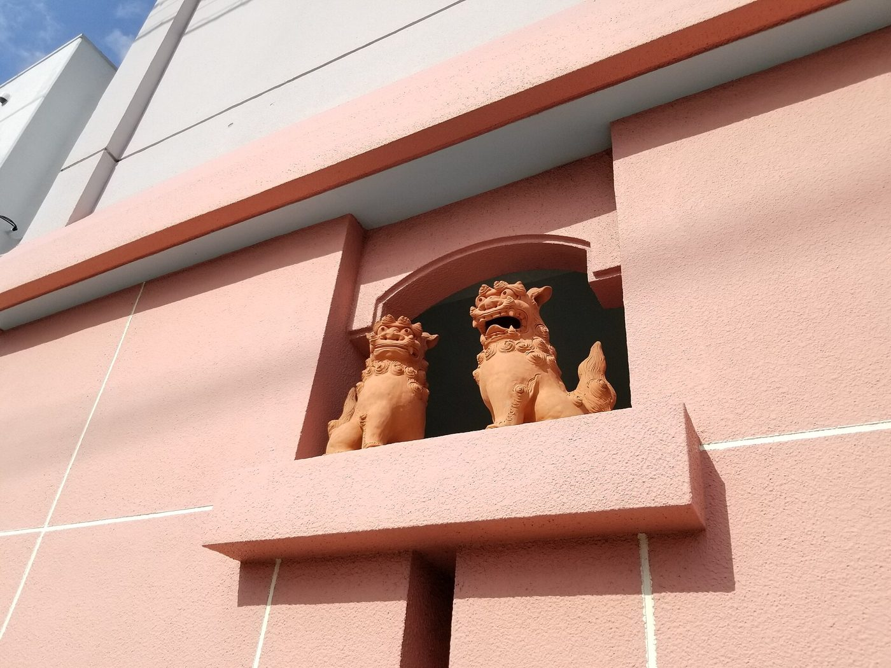
紅型と三線
紅型（びんがた）は、沖縄の染め物です。「紅」は赤ではなく「色」全体を、「型」は「模様」を意味します。交易で入ってきたインドやジャワの更紗、中国の技術などから生まれ、18世紀ごろに大きく発展しました。王国の時代、紅型の衣装を着られたのは士族以上の人たちだけでした。
三線（さんしん）は、中国・福建の「三弦」がルーツの楽器です。14世紀の終わりごろにはすでに琉球に伝わっていたと考えられています。胴にはニシキヘビの皮を張ります。本土の三味線は、この三線がもとになって生まれたと言われます。
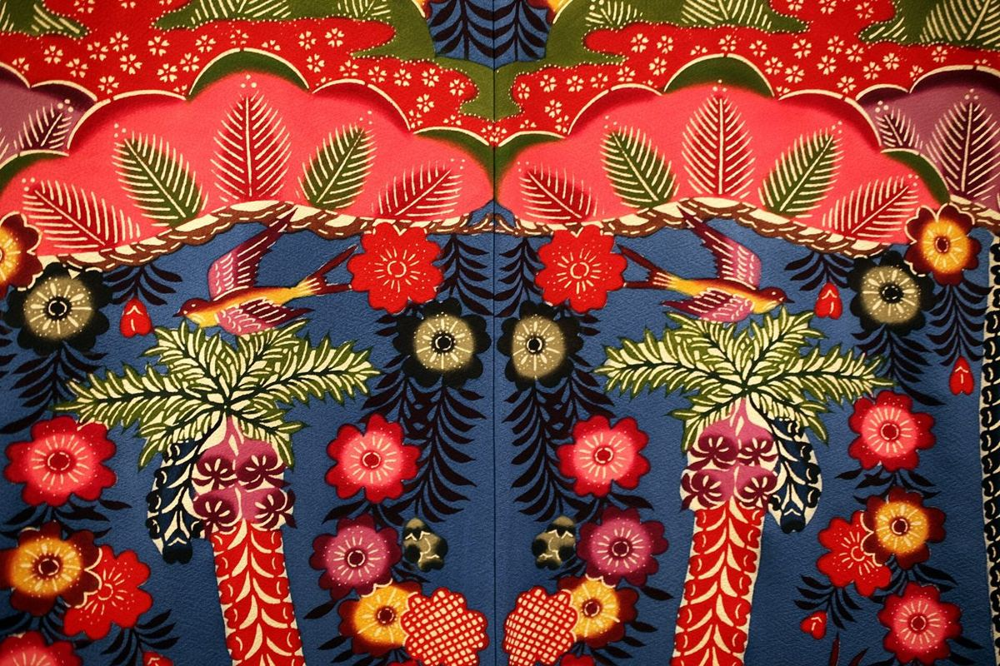
お菓子と調味料のお土産を読む
国際通りの御菓子御殿やわしたショップで、手に取る前に知っておきたいこと。
- ちんすこう：小麦粉・砂糖・ラードで焼く、琉球王国の宮廷菓子がルーツ。中国の菓子をもとに、王家の料理人がつくり上げたと伝えられます。バターではなくラードなのが、豚の国らしいところです
- 紅いもタルト：1986年、読谷村の村おこしから生まれた、今では定番のお土産。元祖は御菓子御殿です。タルト生地は紅いもの形、波打つペーストは風に揺れるいもの葉をイメージしています
- 黒糖：沖縄で黒糖をつくって出荷しているのは、伊平屋島・伊江島・粟国島・多良間島・小浜島・西表島・波照間島・与那国島の8つの島だけ。つくり方はほぼ同じでも、土や天気の違いで、色も香りも島ごとに違います。食べ比べると、島の個性がわかります
- 雪塩：宮古島の地下の海水からつくる、粉雪のようにさらさらの塩。雪の降らない島の「雪」です。ふつうの塩づくりで取り除く「にがり」の成分も残し、14種類のミネラル成分が検出されています
- サーターアンダギー：「サーター」は砂糖、「アンダーギー」は揚げたもの。揚げると片側がぱっくり割れて、花が開いたような形になります
この旅で会えるもの
- 10/25 琉球ガラス村で、泡の入り方がいちばん好きなグラスを1つ選ぼう
- 10/25 工房で、宙吹きの作業を見よう
- 10/27 国際通りで、黒糖を島の名前で選んでみよう
- 10/27 御菓子御殿で、元祖・紅いもタルトの形が「いも」と「葉」だと確かめよう
現地で探す3つ
- 琉球ガラスの泡。光に透かして探す
- 2体のシーサーの口。開いているのはどっち？
- やちむんの皿に彫られた魚の顔。笑っていますか？
出典
- 琉球ガラス：戦前の小工場、戦後に米軍の廃瓶を再利用、気泡・厚みむらが人気に、1,300℃・宙吹き、泡盛瓶→淡いブルー、オリオン瓶→茶、再生と新原料の両方：出典1
- 廃瓶の種類（コーラ・ビール・牛乳）、ラベル等で気泡、色の由来（ビール・一升瓶・ジュース）、1998年県伝統工芸品：出典1 ／ 出典2
- 琉球ガラス村：日本最大の琉球ガラス工房、現代の名工4名：出典1
- やちむんの意味、ゆいまーる、読谷の共同登り窯、線彫・イッチン・赤絵、魚紋、カラカラ・抱瓶：出典1
- 壺屋焼：1682年に3窯場を統合、荒焼・上焼、民芸運動（柳宗悦・浜田庄司）、戦後のガス窯化と読谷移転：出典1
- 金城次郎：1985年に沖縄県初の人間国宝、笑う魚の魚紋：出典1 ／ 出典2
- シーサーのルーツ（中国獅子・ペルシャ）、口の開閉の意味の一説：出典1
- 富盛の石彫大獅子：1689年、火除け、八重瀬岳に向ける、最古とされる：出典1
- 紅型：紅＝色・型＝模様、更紗等の影響、18世紀に発展、士族以上：出典1 ／ 出典2
- 三線：福建の三弦がルーツ、14世紀末には伝来、ニシキヘビの皮、三味線のもと（と言われる）：出典1
- ちんすこう：小麦粉・砂糖・ラード、中国菓子がルーツ、王家の料理人（新垣家）が完成させた（と伝えられる）：出典1 ／ 出典2
- 紅いもタルト：1986年読谷村の村おこし、御菓子御殿が元祖、デザインの意味：出典1 ／ 出典2
- 黒糖：8つの島、約400年、畑の約半分がサトウキビ・黒糖は5〜6%：出典1
- 雪塩：宮古島の地下海水、粉雪のようなパウダー、にがり成分を残す、14種類のミネラル：出典1 ／ 出典2
- サーターアンダーギーの名前、割れて花のような形：出典1
08 / 3分3分でわかる沖縄の言葉 「いただきます」を島の言葉で
この旅で役立つ場所
旅の全日程（食堂・お店・看板）／10/26 沖縄美ら海水族館（「美ら」の意味）／10/27 国際通り（「めんそーれ」の看板）
沖縄の言葉は「しまくとぅば（島言葉）」と呼ばれます。島ごと、地域ごとに違いがあり、ユネスコは沖縄県内の5つの言語を消滅の危機にある言語に挙げています。
全部を覚える必要はありません。旅で耳にする言葉、目にする看板の言葉を、10個だけ。
あいさつ編
- めんそーれ：いらっしゃい。空港や国際通りの看板でよく見かけます
- ちゅーうがなびら：こんにちは。おはよう・こんばんはにも使える、ていねいなあいさつです
- にふぇーでーびる：ありがとうございます。「いっぺー（とても）にふぇーでーびる」で、心からのありがとう
ごはん編
- くわっちーさびら：いただきます
- くわっちーさびたん：ごちそうさまでした
- がちまやー：食いしんぼう。この旅の2人にぴったりの言葉かもしれません
- ぬちぐすい：「命の薬」。毎日の食事で体を整える、沖縄の食の考え方を表す言葉です（1本目「沖縄ごはんの読み方」）
「サーターアンダギー」も、ばらすと意味がわかります。「サーター」は砂糖、「アンダーギー」は揚げたもの。つまり「砂糖の揚げ菓子」です。
気持ち編
- ちばりよー：がんばれよ。応援するときの言葉です
- なんくるないさ：「なんとかなるさ」。のんきな言葉と思われがちですが、もとは「まくとぅそーけー なんくるないさ」。「まくとぅ（誠）を尽くしていれば、なんとかなる」という意味です。何もしなくても大丈夫、ではなく、やることをやったら、あとは大丈夫。「人事を尽くして天命を待つ」に近い言葉です
- ゆいまーる：助け合い（相互扶助）。沖縄の人の気質を表す言葉としてもよく使われます。読谷のやちむんの共同窯も、この精神でつくられました（7本目）
人の呼び方
- うちなーんちゅ：沖縄の人。「うちなー」が沖縄、「〜んちゅ」が「〜の人」
- ないちゃー：本土（内地）の人。私たちのことです
現地で探す3つ
- 看板やのれんの「めんそーれ」
- 食堂のおばあの「くわっちーさびら」
- お土産のTシャツに書かれた「なんくるないさ」。本来の意味を知っている2人は、ちょっと得意になれます
🚗 移動・宿

空と陸の移動、那覇の宿便の候補・受取時刻・連絡先をまとめて確認。
往路候補：10/24 ANA479 羽田20:15 → 那覇22:50
復路候補：10/27 ANA478 那覇20:55 → 羽田23:10（ANA運航）
大人片道1名・諸税込、9/24時点の表示額。購入時に時刻・運賃・手荷物条件・空席を確認。ANA公式で確認
復路候補：10/27 ANA478 那覇20:55 → 羽田23:10（ANA運航）
大人片道1名・諸税込、9/24時点の表示額。購入時に時刻・運賃・手荷物条件・空席を確認。ANA公式で確認
| 候補 | 大人片道1名・諸税込・9/24表示額 | 選ぶ理由・条件 |
|---|---|---|
| 往路 第一候補 ANA479 20:15→22:50 | ¥15,529 | 23:30のレンタカー受取に合わせる候補 |
| 往路 代替 ANA1133 20:35→23:20 | ¥16,221 | 代替候補。到着が遅く、23:30受取との接続は要確認 |
| 往路 代替 SKY521 17:05→19:50 | ¥15,979 | 代替候補。早着で土曜の夕食と休息を取りやすいが、レンタカー受取時刻の変更が必要。スカイマーク公式 |
| 復路 第一候補 ANA478 20:55→23:10 | ¥14,491 | ANA運航。19:00返却から出発まで1時間55分 |
| 復路 代替 ANA1098 20:45→23:00 | ¥14,536 | 代替候補。旧第一候補から代替へ変更（ソラシド運航）。ソラシド公式 |
| 復路 代替 ANA1134 21:10→23:25 | ¥14,491 | 代替候補。ANA478と同額だが羽田到着が遅い |
第一候補の往復2名は (¥15,529＋¥14,491)×2＝¥60,040。マイルは運賃条件で変わるため、現金予算から差し引きません。
ABCレンタカー 那覇空港営業所
24日23:30受取 → 27日19:00返却
同じ那覇空港営業所（那覇市田原1-17-9）へ返却。ヤリスクラス・禁煙・AT、2名。車種はクラス指定のためヤリスに確定していません。ナビ・ETC車載器・バックカメラ・Bluetooth付き。ETCカードは別途準備。
空港から無料送迎
国内線到着1階3番出口から道路を渡り、レンタカーバス乗場11-Aへ。送迎は7～10分、予約不要（予約控えの案内）。待ち時間と貸出手続は別途必要です。
遅便受付と連絡
遅便受付は到着予定時刻19:30～23:30の便が対象。23:30より後の到着予定便は対象外。予約入力便はANA479（20:15→22:50）。航空券 。遅延時の連絡方法と受付条件を事前に確認。☎098-859-5555（通常の電話受付8～20時）。
予約控えの金額 ¥16,900
基本料金¥13,600＋遅便料金¥3,300。オプション・乗捨料金は各¥0、クーポン値引きの記載なし。免責補償制度Ａ（込み）。NOC補償・特別サポートの加入と取消条件は控えに記載がなく未確認。支払いはクレジットカードを選択。
27日の返却と帰りの便
予約控えの返却時刻は19:00。候補便ANA478 20:55までは1時間55分です。送迎バスは15～20分間隔・約7分（ABC公式）で、空港着は19:40ごろが目安。ANAの締切は保安検査20:35（出発20分前）・搭乗口20:45（10分前）・預け荷物20:35。送迎が混む場合に備え、必要なら返却を前倒し。復路便の確定後に、余裕を持って空港へ着ける時刻を確認してください。
宿：スマイルホテル那覇シティリゾート
3泊・2名 ¥18,024
10/24～27、ダブル・素泊り。久米2-32-1。
保存済み予約情報の無料キャンセル期限は10/22(木)23:59。変更・取消の前に予約控えで条件を確認。
保存済み予約情報の無料キャンセル期限は10/22(木)23:59。変更・取消の前に予約控えで条件を確認。
遅着と駐車を確認
☎098-869-2511。24日23:30の車受取後に到着する旨を連絡し、深夜チェックイン可否を確認。24・25・26夜の駐車条件・空き・料金も確認。ホテル公式
日別ルートと運転の余裕
25 南部
那覇→首里→糸満漁民食堂→琉球ガラス村→瀬長島→那覇。ウミカジ15:30着を守る。
26 北部往復
那覇→許田→古宇利→本部の昼食→美ら海→那覇。高速・休憩・渋滞を見込み、遅れたら古宇利を省略。
27 中部から空港
那覇→中城→ENZO→牧港→那覇の土産→ジャッキー→給油・返却→空港。ABC那覇空港営業所への19:00返却予約を基に、送迎・搭乗条件を確認して再調整。
- 朝夕の渋滞と駐車待ちを見込む。バスレーン・交通規制は現地標識を優先。
- 25・26の夕食前は車をホテルに置く。飲酒後は運転せず徒歩・タクシー等を使う。
- 10/23～25は奥武山公園で沖縄の産業まつり。25日は周辺混雑を見込み、見学を無理に追加しない。具体的な交通規制は未確認。主催側の案内
- 写真や買い物のために路上へ停めず、施設・有料駐車場を利用する。
- 長距離移動は休憩を挟む。便・営業所の条件が確定したら到着・返却時間を再確認する。
📋 予約・持ち物
期限の近いものから、電話や予約サイトへ。航空券・食事の金額は見積りです。
手配済み・完了
持ち物・出発前チェック
チェックはこの端末に保存します。
- 免許証・ETCカード：運転者全員の免許証とETCカード。
- 決済手段・予約控え：使うカードと確認書の保存先。
- 充電まわり：充電器・車載ケーブル・モバイルバッテリー。
- 靴・羽織り：歩きやすい靴と薄手の羽織り。
- 日差し・雨への備え：帽子・日焼け止め・折りたたみ傘・虫よけ。
- 買い物の持帰り：エコバッグ・緩衝材・荷物の空き容量。
- 並ぶ店の切替条件：糸満12時入店、きしもと12時食事開始、ジャッキー16:40着席の見込みで判断。
- 出発前の確認：臨休・天気・美ら海の当日開催表を確認。
お土産は25日にグラス、27日に菓子と自宅用を。買うもの・場所・持帰りの注意を見る →
💴 予算
金額は予約控え・見積りに基づきます（食事は飲み物込み）。追加料金・メニュー変更時は再計算。
| 項目 | 内訳 | 金額・2名 | 状態 |
|---|---|---|---|
| 航空券 | (往路15,529＋復路14,491)×2 | ||
| ホテル | ダブル・素泊り3泊・2名 | ||
| レンタカー | ABC：24日23:30～27日19:00。基本13,600＋遅便3,300 | ||
| 高速 | 北部往復等 | ¥4,000 | 見積り |
| ガソリン | 3日間の走行分 | ¥5,000 | 見積り |
| 駐車 | ホテル・観光・市内買い物 | ¥6,000 | 見積り |
| タクシー等 | 飲酒夕食時・追加移動の予備 | ¥6,000 | 見積り |
| 入場料 | (美ら海2,180＋首里400＋中城500)×2 | ¥6,160 | 掲載料金の計画額 |
| 食事 | 下の2名分の食事予算を合算 | 見積り | |
| お土産 | グラス・菓子・調味料等 | ¥15,000 | 見積り |
| 予備費 | 価格上昇・追加交通・メニュー差等 | ¥15,000 | 計画枠 |
| 合計 | 上の11項目の合計 | 2名・計画額 |
食事予算の内訳（全行2名合計）
| 食事 | 2名の目安 |
|---|---|
| 24夜食・軽食（任意） | ¥4,000 |
| 25朝軽食 | ¥1,500 |
| 25糸満漁民食堂 | ¥6,000 |
| 25ウミカジのカフェ | ¥2,500 |
| 25まつもと・飲み物 | |
| 26許田の軽食 | ¥2,000 |
| 26きしもと食堂 | ¥3,000 |
| 26まーちぬ家・飲み物 | |
| 27ポーたま | ¥1,600 |
| 27 ENZO | |
| 27ブルーシール牧港 | ¥1,800 |
| 27ジャッキー | ¥9,000 |
| 空港等の軽食余裕 | ¥2,500 |
| 食事合計 |